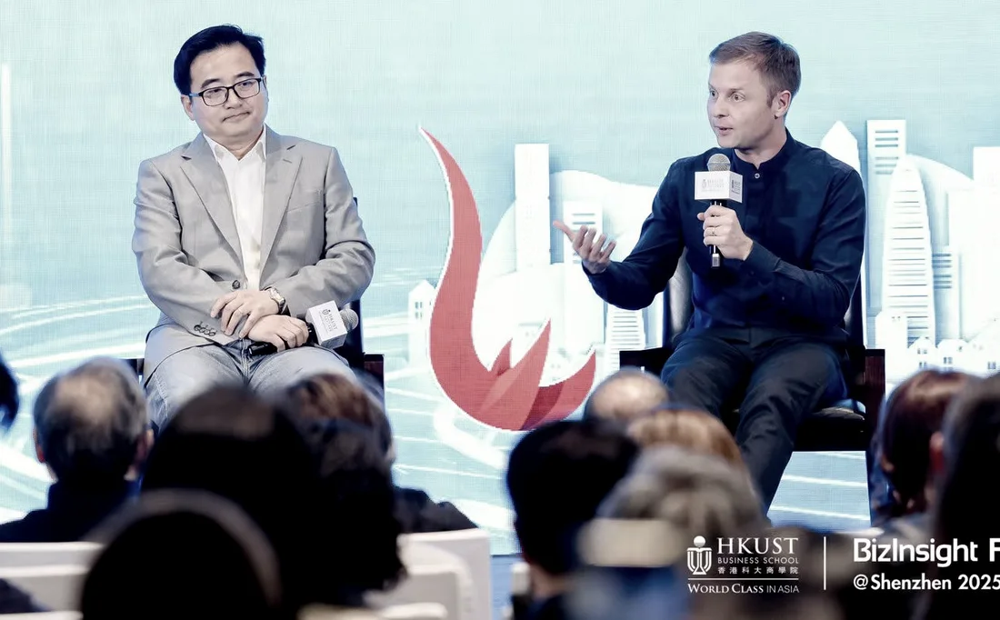
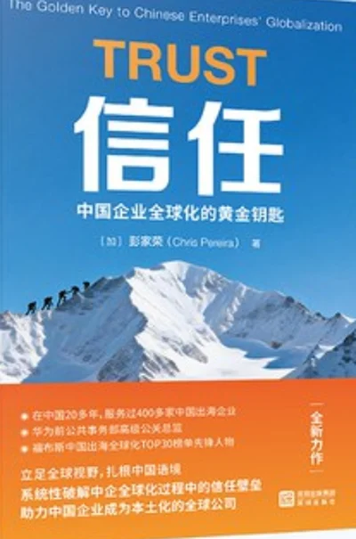
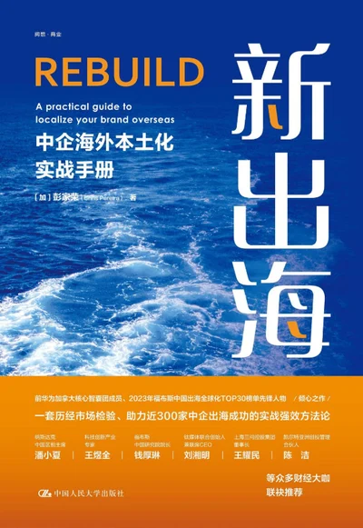
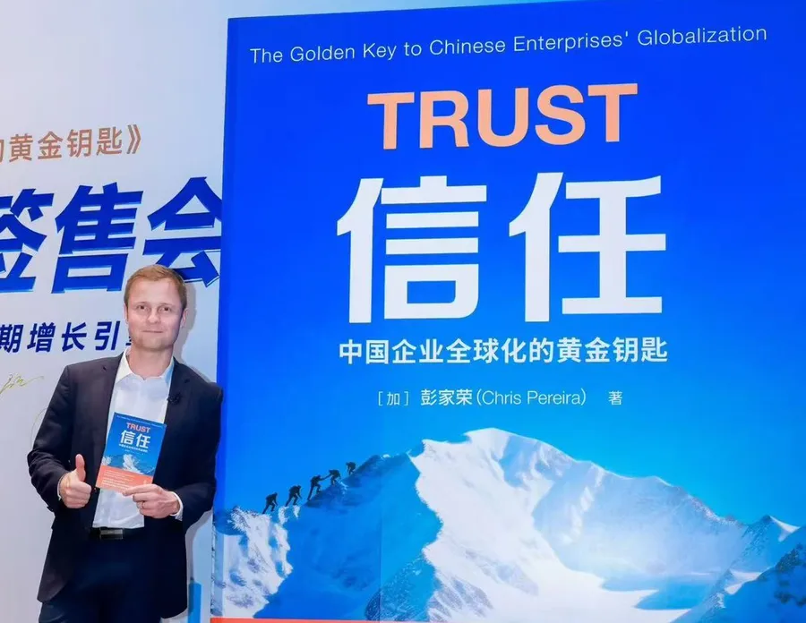

Chris Pereira彭家荣
Twenty years in China, and I'm still looking West.
British Canadian business leader, author and columnist. I write weekly about what China shows the West about itself, and comment on China business from the inside, drawing on 20+ years of living and working there.
Writing
My weekly Substack Insights from China, my Chinese-language WeChat account 美讯彭家荣, and LinkedIn pieces on what China reveals about the West.
- WeChat我对《金融时报》说：深圳的速率，正“席卷全球”Shenzhen Speed Is Sweeping the WorldWhat I told the Financial Times about Shenzhen speed
Building on my Financial Times interview, I look at how DJI and Insta360 came to sell over 90% of the world's handheld smart cameras while GoPro's share fell to 3%. Shenzhen companies are taking their domestic "civil war" overseas, entering each other's categories and suing each other over patents in the US. Shenzhen speed is largely forged by competition, and that competition is about product iteration and engineering more than price cuts. Next, Chinese companies will meet each other head-on in global markets.
Read the full article ↗ - WeChat我们别再总是说“出海”Let's Stop Saying "Going Overseas"From visiting abroad to taking root locally
Chinese companies enter a new stage of globalization when they stop calling it "chuhai". Instead of acting as foreign visitors, they should aim to become a German company from China in Germany, a British company from China in the UK. Drawing on 20+ years and 500+ companies, I outline three stages: the world buying from China, Chinese firms selling abroad, and now Chinese companies taking root locally.
WeChat does not allow its articles to be linked from outside the app. For the full article, please contact me.
- SubstackStarbucks and America's Strange Logic of Isolating XinjiangFirst cotton, then red dates. Now lattes.
When Starbucks opened two stores in Urumqi, Congressman John Moolenaar demanded they close. I argue that cutting Xinjiang off from global markets hurts the Uyghurs Washington says it wants to help, leaving Beijing as the region's only employer, customer and safety net. Blacklists and forced labour presumptions on local goods take the US further from the trade that made the West prosperous.
Read the full article ↗ - WeChat大平台为何集体向“AI垃圾”宣战？Why Big Platforms Are Declaring War on "AI Slop"Quality is the lifeblood of content
YouTube, LinkedIn and Xiaohongshu are all tightening their algorithms against low-quality AI-generated content. Quality is the lifeblood of content: pure AI generation recycles existing material and degrades the whole ecosystem, so platforms are protecting themselves. Creators who game the system will lose reach; real insight and human voice will win.
Read the full article ↗ - SubstackThis Performative Marketing Has to StopOnly authentic brand building wins consumer trust
In this guest essay, Oliver Pearce of iMpact in London argues that many Chinese brands stage overseas visibility mainly for audiences back home, from Times Square billboards to quiet trade show pavilions. He traces this to pressure for quick growth and managers who reward awards and photos. Real brand building is slower, and examples like Dreame and Labubu show that authenticity wins local audiences.
Read the full article ↗ - SubstackChina's Consumers Have Seen It AllA conversation with Olivia Plotnick
In this conversation, Olivia Plotnick, founder of the Shanghai agency wai social, explains why China is one of the world's most demanding consumer markets. Purchases are driven by recommendations and live streams, and years of fierce competition have made shoppers hard to impress. She advises newcomers to bring humility and realistic budgets and timelines, and to make sure headquarters properly supports local teams.
Read the full article ↗ - SubstackShenzhen's Civil War Has Moved to BerlinWe took 60 Chinese tech brands to IFA
More than half of the 1,900 exhibitors at IFA 2026 in Berlin were Chinese, and Europe is now the main battleground for Chinese consumer tech. I look at what the leaders are doing: TCL and Hisense selling whole smart homes, Midea building localisation into engineering with its PortaSplit, and Chinese firms owning robot lawnmowers. The task now is turning European openness into lasting trust.
Read the full article ↗ - SubstackThe West Needs A RenaissanceChina's cultural pride, and the West's lack of it
China is showing deep cultural pride, seen in the guochao movement and in brands like Fotile, while the West has lost confidence in its own inheritance. I recall a Toronto education that taught me Canada had no culture. The West should teach its achievements alongside its failures and retell its own story, because a civilization that forgets its story eventually gets told someone else's.
Read the full article ↗ - SubstackBusiness Across BordersA conversation with Dennis Zhu
I spoke with Dennis Zhu, a former Audi China executive and founder of Guangzhou Santis Tech Consulting, about how China Europe business has become a more equal relationship. He says both sides hold misconceptions about each other and that trust comes from learning from, caring for and respecting partners. His advice to European firms is to give their Chinese teams real authority to make decisions.
Read the full article ↗ - SubstackWestern Brands in China Need to Start from ZeroWhen "foreign" stopped meaning "better"
Western brands in China can no longer rely on imported prestige. Chinese consumers now choose local brands they see as better designed, better priced and more in tune with their culture, as Nike, Starbucks and luxury labels have learned. I treat this as a fixable business problem: hire local talent, give China teams real decision making power, and build community, as Gap and KFC have done.
Read the full article ↗ - SubstackWhat Makes a Tech Product Award-Worthy? A Judge's Inside GuideIn conversation with Eliane Fiolet
I interview technology journalist and awards judge Eliane Fiolet on what happens on the other side of the judging table. Winning applications make the innovation clear immediately, list key differentiators concisely and show strong design and user experience. She explains how judges tell a genuine innovation from an incremental upgrade, lessons especially useful for Chinese tech brands.
Read the full article ↗ - SubstackWhat to Expect at IFA 2026The trends shaping Berlin
My preview of IFA 2026 in Berlin argues that AI, robotics and connected devices have moved from concept into everyday products. AI is now assumed in everything from laptops to kitchen appliances, humanoid robots get IFA's largest showcase, and connected living is shifting toward energy and health. The show's real value lies in the business relationships it builds, especially for Chinese brands, about a third of exhibitors.
Read the full article ↗ - SubstackHow Louis Vuitton Is Winning in Court and Losing ChinaLV vs. 1.4 billion Chinese
Louis Vuitton has filed 1,691 trademark lawsuits in China over five years, including a win of about $1.5 million against Molly Tea over a four petal logo. I argue that trust is a foreign brand's scarcest asset in China, and suing small shops and designs tied to traditional motifs spends it fast. Counterfeiting deserves enforcement, and Chinese brands abroad face the same risk.
Read the full article ↗ - SubstackWorld AI Conference 2026Could China be the world's AI gateway?
At the 2026 World AI Conference in Shanghai, China shifted the AI debate from frontier safety toward access. Xi Jinping pledged AI training for developing countries, and 29 countries joined the new WAICO body, with no major Western democracy among them. I argue Beijing is positioning itself as the default AI partner for the Global South, and that private firms may matter most in cementing that lead.
Read the full article ↗ - SubstackTrust: The New Battleground for Chinese Companies Going GlobalWhat comes after conquering manufacturing
Chinese companies have mastered manufacturing, quality and price, and I argue that success abroad now depends on trust, a multiplier sitting underneath product and price. Brands like DJI and Midea have largely won consumer trust, while institutional trust with governments and regulators has hardened. Lenovo, Haier and BYD show how local leadership and physical presence build credibility. The piece draws on my interview with CKGSB Knowledge.
Read the full article ↗ - SubstackYou Need to Visit China. Now.On history and China's relationship with the West
Western audiences still see China through an outdated lens. I trace how China fell into its "Sick Man of Asia" years and began recovering after 1978, and argue it is resuming its historic place in the world rather than seeking to dominate. My advice is to go and see Shenzhen, Hangzhou and Shanghai for yourself, learn how business works there, and bring ideas home.
Read the full article ↗ - SubstackLenovo at the FIFA World Cup 2026Scoring points where it matters most
Drawing on my comments to Nikkei Asia, I look at Lenovo as FIFA's first Official Global Technology Partner at the 2026 World Cup. Lenovo wants to be known for more than laptops, and is treating the tournament as a live, high-profile case study. The depth of the commitment sets it apart: show up, do the work and let reputation follow.
Read the full article ↗ - SubstackWhat Are Western Incubators Incubating?China builds companies, Canada hosts wellness workshops
I argue that Western incubators, especially Canadian university programs, focus on workshops, panels and networking instead of building companies. Chinese programs such as Shenzhen's XBotPark and Tsinghua's TusStar have graduated hundreds of companies through practical projects, experienced mentors and intense competition. Incubators should be judged by the products they bring to market, and the West needs to back its young founders.
Read the full article ↗ - SubstackEurope: Answer Your Damn Emails.China's competitive edge begins with a reply
A German company's staff sent auto replies saying they would have no email access for up to four weeks. I argue that China's competitive edge starts with simple responsiveness, and that subsidies explain less than people think. My fix for Western firms: acknowledge messages the same day with a concrete deadline, drop "no access" auto replies, and measure response time. Rest and responsiveness can coexist.
Read the full article ↗ - SubstackThe New Wave Is ComingWhy foreign companies are looking at China again
Companies from Europe, Canada, Southeast Asia and the Middle East are looking at China as a market again, and both foreign investment figures and inquiries to iMpact reflect it. I point to three forces: goodwill from China's tech progress, expanded visa free entry, and Chinese firms hiring abroad. Newcomers can now deal directly with Chinese clients, though they must still earn trust.
Read the full article ↗ - SubstackStop Reading About China. Come and See It.Shenzhen, APEC and Global Connect Show
With APEC's Economic Leaders' Meeting coming to Shenzhen in November, there is no better moment to understand China first-hand. Geopolitical debate constantly references China's supply chains, AI and hardware, yet few observers see the ecosystem up close. Global Connect Show takes international journalists into Shenzhen, and brings the same lens to New York.
Read the full article ↗ - SubstackCarl Sagan Has a Message for Trump and XiA cosmic perspective
Starting with a conversation with a stressed stranger on a train, I suggest a way through economic anxiety, geopolitics and the endless news cycle: Carl Sagan's cosmic perspective. Looking past the headlines of the Trump and Xi summit in Beijing to long term trends, I argue that on a cosmic scale the US and China are remarkably close and should find ways to coexist.
Read the full article ↗ - SubstackWestern Companies Are Terrible at Customer Service in ChinaSlack left China. Chinese users will remember how.
Salesforce's abrupt shutdown of Slack across Greater China in April 2026, with little migration help, fits a pattern of Western firms treating Chinese customers poorly. I cite LinkedIn's retreat, the BMW Mini ice cream incident and Apple's warranty controversy. China is a primary market, and how a company leaves shapes its reputation for years. Slack left China, and Chinese users will remember how.
Read the full article ↗ - SubstackFrom Exporters to Ecosystem BuildersHow Chinese B2B firms are reshaping European industry
Adapted from my Fortune China column, this piece tracks how Chinese B2B firms in Europe are moving from chasing traffic to building ecosystems. European clients now expect short lead times, which triggered a record wave of Chinese greenfield investment. Market entry has become chain migration, and the leading firms now sell solutions, standards and irreplaceability.
Read the full article ↗ - SubstackLaw as LibertyWhy Chinese society might be more "free" than the West
I argue that rules are the precondition for liberty. Western prosperity rested on durable legal systems from Roman law to English common law, which let people plan and invest with confidence. Since the 1960s, Western culture has come to treat discipline and norms as oppression. Singapore's order and China's poverty reduction suggest that structure enables freedom, and that China may be freer in practical terms.
Read the full article ↗ - SubstackSupply Chains Don't LieThe Canton Fair and the real direction of global trade
Reports of Western companies fleeing China are overstated, and supply chains reveal strategy better than official statements do. Manufacturing is moving to Vietnam, Mexico and India, but Chinese firms are leading that move, which deepens China's global networks. Success in China still depends on showing up in person, through factory visits, trade fairs, banquets and WeChat, and no due diligence report replaces that.
Read the full article ↗ - SubstackWhy China Is Suddenly Watching Its CholesterolHealth will guide consumer purchases in 2026
The sudden deaths of journalist Wei Hua and education influencer Zhang Xuefeng in March 2026 pushed heart health into China's public conversation. Sales of heart medicine surged, delivery platforms are adding healthy meal filters, and protein is being marketed as a lifestyle. I argue that a generation raised on rich diets is now facing the bill, creating a market foreign food and health brands should watch.
Read the full article ↗ - SubstackChina's "Harbour of Stability"Why global business interest is surging
Amid war and unpredictable US policy, China offers continuity and stability despite weak consumption, a property slump and demographic decline. Inquiries to my firm about entering China rose fourfold in early 2026. With the 15th Five Year Plan opening 205 more sectors to foreign investment, I see openings in healthcare, biotech and manufacturing for firms willing to commit long term. First published in the South China Morning Post.
Read the full article ↗ - SubstackGuanxi Could Get You Recommended by DeepSeekAI is the new gatekeeper
CCTV's 315 Gala exposed Generative Engine Optimization, where crafted content floods the web until AI models recommend a product; a made up smartwatch was ranked by AI within days. I argue GEO is guanxi automated, and similar manipulation happens in the West, only less visibly. Real credibility comes from genuine third party voices such as journalists, analysts, partners and customers.
Read the full article ↗ - WeChatAI Agent的“最后一公里”，是人The "Last Mile" of AI Agents Is PeopleAgents still need a human to take responsibility
AI agents add enormous capability, but delivering value still needs a human at the last mile. Someone has to approve, verify and take responsibility, especially in medicine, finance and law. In relationship-driven work like connecting companies with overseas resources, needs are fuzzy and contextual, and final judgment stays human.
WeChat does not allow its articles to be linked from outside the app. For the full article, please contact me.
- SubstackAsia Is Serious About Merit and CompetencyThe 15-second airport customs experience
Drawing on my own travels, I contrast immigration clearance in under 15 seconds at Singapore's Changi and fast security checks in Shenzhen with long queues, unreliable transit and crime in Western cities. I argue Asia's edge comes from a focus on competence, where hiring and projects are judged on capability and officials answer for poor results. Chinese companies expanding abroad should price these gaps into their plans.
Read the full article ↗ - WeChat你可能正在用AI批量得罪客户You May Be Offending Clients in Bulk with AIAutomated outreach is damaging B2B relationships
Inboxes are filling with near-identical, AI-agent-written outreach emails, and they make a terrible first impression. In B2B, and especially overseas, reputation matters more than reach: an obviously automated email signals you won't invest time in the relationship. Use AI agents for internal tasks and ad analytics, not for building trust with partners.
WeChat does not allow its articles to be linked from outside the app. For the full article, please contact me.
- SubstackThe Hard Road: China Is Winning an AI Race the West Doesn't Care AboutDancing robots are not the main show
China and the West are running different AI races. Silicon Valley builds cognitive AI for reasoning, writing and code, sold to knowledge workers as subscriptions. China puts intelligence into factories, ports, logistics and robots under its AI+ strategy, partly because Chinese buyers never liked paying for software. I argue AI combined with hardware has far more potential, as factories in Dongguan already show.
Read the full article ↗ - LinkedInTrust is the biggest challenge for Chinese companies going globalLessons from 500+ companies expanding overseas
After working with more than 500 Chinese companies expanding globally, I see building trust overseas as their single biggest challenge: trust with clients, governments, media, investors and talent. My book Trust 《信任》, published by Shenzhen Publishing House, sets out how to build that trust quickly in a new market.
Read the full article ↗ - SubstackChina's "Rest of World" Strategy Is Opening Non-American DoorsWhat the Iran war means for chuhai
The Iran war has rattled Chinese firms planning Gulf expansion, but I see it as a temporary disruption that hides a lasting shift. Chinese companies are reducing reliance on the US and building a corridor from the Gulf to London. Private firms are finding consumer demand and partnership in Saudi Arabia and the UAE, while warmer UK ties make London a base for talent and European headquarters.
Read the full article ↗ - WeChat伊朗局势升级，“出海中东”要缓一缓吗？As the Iran Conflict Escalates, Should Chinese Firms Pause Expansion into the Middle East?Instability belongs in the plan from day one
Safety comes first, but instability should already be built into any serious Middle East strategy, so good plans shouldn't be overturned easily. Competitors who can't cope may pull back, leaving room for those who stay. The region may also return to stability faster than expected, since Saudi Arabia, the UAE and others want calm.
WeChat does not allow its articles to be linked from outside the app. For the full article, please contact me.
- SubstackTop 10 Lesser-Known Chinese Startups to WatchBeyond DeepSeek and TikTok
A year after the DeepSeek shock, I profile ten lesser-known Chinese startups worth watching, many in embodied intelligence and robotics. They include Spirit AI, LimX Dynamics, Galaxea AI, DEEP Robotics and PureBlue AI, each with a short explanation of what it does and why I am watching it.
Read the full article ↗ - SubstackWhere Are the North Korean Startups?The elephant in the room
I argue that economic freedom drives national prosperity, and that China's rise since the 1970s came from market liberalisation more than Party planning. North Korea has run economic plans since the 1950s with little to show for it, as Kim Jong Un himself has admitted. Private successes like Labubu, Unitree and Dreame tell the real story. Anyone crediting five year plans needs to explain North Korea.
Read the full article ↗ - SubstackLessons From the Chinese Economic "Miracle"Size of government matters more than form
Having watched Zhengzhou transform since I arrived in 2004, I ask why China grew faster than Western democracies. State planning failed before 1978, and growth took off when Deng's reforms, starting in Shenzhen, reduced state intervention. China's rise supports free market theory and offers no endorsement of its political system. Wealth is created in freer markets, and government intervention from any source erodes prosperity.
Read the full article ↗ - SubstackThe Narrative GapInsights from the 2026 LSE China Development Forum
Reflecting on my panel at the LSE China Development Forum, I look at the gap between China's growing soft power in the West and how Chinese companies are perceived. Words and stories carry weight. I argued that trust and friendship are critical, and asked whether Chinese companies can turn today's soft power momentum into lasting credibility.
Read the full article ↗ - WeChat不被媒体认可的出海品牌究竟做了什么？What did the brands the media don't respect actually do?The invisible reputation that monitoring tools miss
Beyond coverage counts lies an invisible reputation: what journalists privately think of a brand. Chinese brands lose it through "eye-roll moments", such as hiding where they come from, staging empty events or rewriting reporters' copy. Being open about your origins and respecting the media's independence builds the trust that coverage depends on.
Read the full article ↗ - SubstackThe Bildungsroman of Chinese BrandsWhy hiding your origins means losing your edge
A robotics founder asked me whether to register overseas to look less Chinese. I argue Chinese companies should own their origins abroad, because their momentum comes from capabilities rooted in China. Foreign audiences care more about legal compliance and local contribution than nationality. SHEIN's claim to be Singaporean leaves it with an identity crisis, while DJI openly embraces Shenzhen. For brands, as for people, maturity starts with self acceptance.
Read the full article ↗ - SubstackCanada's FAFO MomentAntagonizing a superpower neighbour never ends well
As the American led order ends, Canada, the country most tied to the United States, faces the greatest risk. It has little leverage and keeps losing skilled workers south. I argue US influence over Canada will persist for decades, so Canada cannot meaningfully expand trade with China without Washington's approval and should first repair ties with the Trump administration.
Read the full article ↗ - SubstackCanada and China: Star-cross'd LoversThe truth about Canadian diplomacy with China
I argue that Canada, sheltered for a century by geography and a friendly neighbour, never developed the diplomatic skill that great power politics demands. Its pivot toward China is naive given its limited leverage with Beijing and its deep dependence on Washington, and a weakened foreign service makes matters harder. Canada should pursue a middle path and economic reform, with the long term aim of becoming a major power.
Read the full article ↗ - SubstackParenting Is Improving in ChinaAn encouraging trend
Parenting in China is getting gentler. Shenzhen slogans call for treating children with respect, urban families increasingly avoid corporal punishment, and studies show falling child maltreatment and growing disapproval of spanking among younger generations. Because the health of a society begins in childhood, I suggest freer and more supportive childhoods could eventually produce a more open China, and I contrast this with a less favourable trend in the West.
Read the full article ↗ - SubstackCars for Canola Is Not a Recipe for Canada's ProsperityChina won't save Canada. Canada needs to save Canada.
I welcome warmer relations between Canada and China, but China does not need Canada, which makes up under 5% of Chinese exports. The cars for canola deal is more show than substance and signals weakness. Canada's prosperity depends on domestic reform, tackling high taxes and oligarchic structures, with the aim of becoming the Singapore of the Western hemisphere. China won't save Canada.
Read the full article ↗ - WeChatCES2026紧急通知：这些奖不算数了CES 2026 urgent notice: these awards no longer countAdvice from a CES Innovation Awards judge
On the last day of CES 2026, organisers told media that awards from outside groups can no longer use the name "Best of CES". As one of the official CES Innovation Awards judges, I give brands planning for CES 2027 three pieces of advice on which recognition really counts and how to earn it.
Read the full article ↗ - LinkedInWhy a US "crackdown" now feels like a badge of honour for Chinese foundersAn ironic shift in China's global business
For many Chinese founders, a US crackdown now reads as a badge of honour. Huawei, DJI and BYD all thrived after being targeted, and the same is happening in biopharma, smart healthcare and robotics. I call it the Paper Tiger Effect: if Washington spends political capital to restrict you, you are probably doing something right.
Read the full article ↗ - WeChatAI内容是如何消磨你的用户信任度的？How AI content wears down your customers' trustRefusing to use AI blindly is the new differentiator
Web Summit in Lisbon felt like an AI carnival, with tools that write posts, emails and ads at the push of a button. When everyone uses AI the same way, content becomes generic and erodes customer trust. Using AI thoughtfully, with a real human voice, is now the biggest differentiator.
Read the full article ↗ - WeChat想让AI推荐你的品牌？得先弄懂GEOWant AI to recommend your brand? First understand GEOGenerative Engine Optimization for brands
People are switching from searching to asking AI, so Generative Engine Optimization (GEO) is overtaking SEO. AI gives answers drawn from a few trusted sources, not pages of links. Brands that want to be recommended need credible coverage and clear, consistent information in the sources AI relies on.
Read the full article ↗ - LinkedInShenzhen now hails helicopter taxis by QR codeInnovation, Shenzhen style
Shenzhen has launched helicopter taxis from the city centre to the airport, booked by scanning a QR code in a WeChat mini program, for about US$550 a seat. Helicopters are rare over Chinese cities because of airspace rules, so the service lit up social media and shows why Shenzhen leads China in technology and infrastructure.
Read the full article ↗ - LinkedInSigns of a warming sentiment towards China in the USWhat I'm seeing on the ground
I see clear signs of warming sentiment towards China in the US, from the news and social media to the questions journalists now ask me. Younger Americans have never felt threatened by China and like Chinese products such as TikTok, Temu and Shein. The brief exodus of TikTok users to RedNote showed real human connection between the two peoples.
Read the full article ↗ - WeChat聚焦长期：特朗普上任，新举措怎么看？Focus on the long term: how to read Trump's first movesRead Trump's first moves with a long-term lens
Trump's first executive orders on TikTok, tariffs, energy and more have Chinese companies abroad reading every headline. Tracking each move is short-termism. Stay focused on markets and customers, avoid taking sides on divisive issues, and do good locally in ways no one can object to, such as helping young people and supporting customers.
Read the full article ↗ - LinkedInMany Chinese companies go abroad before they are readySpeed is China's strength and its overseas risk
Many of my Chinese clients are taking their businesses abroad before they are ready. Growth prospects overseas are better than at home and enthusiasm has never been higher, but Shenzhen speed has a cost. Too many companies in this new wave have yet to adapt how they do business for markets that work very differently from China.
Read the full article ↗ - WeChat百度公关危机背后折射出这些问题What Baidu's PR Crisis RevealsWolf culture and communications built for the boss
A Baidu vice president's viral videos became a global news story. I argue the crisis exposed deeper problems: a copy of Huawei's "wolf culture" that manages upward instead of serving customers, overseas communications built to impress bosses rather than audiences, and a slow international strategy that is driving talent away.
WeChat does not allow its articles to be linked from outside the app. For the full article, please contact me.
- WeChat广交会效果不好？我有这些建议Canton Fair Disappointing? My AdviceGo where your overseas buyers are
Exhibitors told me this year's Canton Fair produced few foreign buyers. If your customers are overseas, go to overseas trade shows to find clients and build friendships, while using the Canton Fair to maintain existing relationships. The fair itself needs a brand upgrade: younger foreign buyers barely know it exists.
WeChat does not allow its articles to be linked from outside the app. For the full article, please contact me.
- WeChat“中国制造”短视频火爆北美：偶然还是必然"Made in China" Short Dramas Take North America: Luck or Inevitability?China's latest cultural export to North America
After e-commerce, social media and games, Chinese short-drama apps like ReelShort are the latest "copy from China" success in North America, with 40+ apps, nearly 55 million downloads and $170 million in revenue. Chinese game companies are moving in with lower production costs and AI tools. China has built a clear competitive edge in a market set to pass $100 billion.
WeChat does not allow its articles to be linked from outside the app. For the full article, please contact me.
- WeChatAI正在改变广告营销、影视、游戏等行业AI Is Transforming Advertising, Film and GamingA chance to create English content at scale
A film scene that once cost $1 million to shoot could now cost under $10,000 with tools like Sora, and AI could cut ad production costs by 90%. Chinese companies competing internationally should seize this: AI can finally help them create English-language video content at scale. But AI cannot replace authority, expertise and third-party voices.
WeChat does not allow its articles to be linked from outside the app. For the full article, please contact me.
- WeChatSora并不完美，但我们正处于技术变革前夜Sora Isn't Perfect, but We're on the Eve of a Tech RevolutionA turning point for film, games and advertising
OpenAI's Sora isn't the first text-to-video model, and it has flaws, but 2024 may prove a turning point like 1687 and Newton. Investors will revalue AI video startups, and many will fail to raise money. Film, gaming and advertising face deep cost cuts and job losses, with some predicting AI could generate 80% of brand content.
WeChat does not allow its articles to be linked from outside the app. For the full article, please contact me.
- WeChatTemu一掷千金撒钱超级碗，中国企业需要效仿吗？Temu Splashes Out on the Super Bowl Again: Should Chinese Companies Follow?Smart timing beats buying out the show
Temu spent an estimated $35 million on Super Bowl ads this year, but many Americans are asking where the money comes from, and its core users are shrinking. Sports advertising is an effective way for Chinese brands to build awareness in the US, but buying out the show isn't necessary. Smart timing and thoughtful creative do more to earn American consumers' trust.
WeChat does not allow its articles to be linked from outside the app. For the full article, please contact me.
- WeChat海外传播服务机构出现“李鬼”，品牌方应仔细辨别Beware of Imposter Overseas PR AgenciesCheck a partner's track record before you hire
Some new overseas communications agencies are pitching Chinese brands with case studies that other firms actually delivered. In Western markets integrity is everything: hiring a dishonest agency risks your money and your brand's reputation. Chinese companies going global should do proper background checks on any partner.
WeChat does not allow its articles to be linked from outside the app. For the full article, please contact me.
- WeChatCES 2024回顾：参展不是摆摊CES 2024 Review: Exhibiting Is More Than Setting Up a StallMindset is the real barrier at global trade shows
Chinese exhibitors at CES 2024 improved, but many still showed products and sent press releases while Korean startups, on similar budgets, built booths and trained staff to win visitors over. The biggest barrier to Chinese brand influence overseas is mindset. At global trade shows, focus on closing the distance between brand and customer.
WeChat does not allow its articles to be linked from outside the app. For the full article, please contact me.
- WeChatOpenAI内杠，员工忙跳槽OpenAI's Boardroom Fight and the Talent RushCulture and leadership drive breakthroughs
After OpenAI's board ousted Sam Altman and Greg Brockman, 500+ employees demanded the board resign while Nvidia, Microsoft and Google courted its staff. An OpenAI insider I spoke with explains why: Altman built the focused culture behind its breakthroughs, and without him the company risks becoming an empty shell. Culture and leadership are a tech company's real assets.
WeChat does not allow its articles to be linked from outside the app. For the full article, please contact me.
- LinkedInThe US Should Welcome Companies from ChinaWhy openness serves America better than exclusion
2023 brought growing hostility in the US towards Chinese investment, from the congressional hearings on TikTok to opposition to CATL battery plants. I argue this protectionism is hypocritical and goes against the business principles that made America wealthy. Welcoming Chinese companies creates jobs and investment and serves US interests over the long run.
Read the full article ↗ - WeChat中国企业如何进行黑五促销：提前布局How Chinese companies should approach Black Friday: plan earlyBlack Friday is planned months ahead
If you are only now thinking about Black Friday, it is too late. North American companies plan four to six months ahead. About 70% of North American consumers still shop offline, so success comes from combining stores, KOLs on social media and well-prepared content on your own channels, while watching what competitors budget and plan.
Read the full article ↗ - WeChat中国企业应主动去海外找客户Chinese companies should actively go abroad to find customersGo abroad to find overseas customers
If your customers are overseas, stop waiting for them at domestic fairs. Go to their markets, attend events like CES, and think like a local company with a long-term international mindset rather than a one-off trip. Choose events and partners carefully, and invest in local media, NGO and association relationships.
Read the full article ↗ - WeChat为什么说中国新能源车企应加速进入国际市场Why Chinese EV Makers Should Speed Up Going GlobalTechnology decides who wins
Like Pizarro's steel against the Inca's numbers, technology innovation, not size or history, decides who wins, and European automakers now openly fear China's EVs. Chinese EV makers and their supply chains should go global faster, even building local plants, as Japanese and Korean carmakers did. Expect criticism once you take root abroad, and respond with grace rather than hitting back.
WeChat does not allow its articles to be linked from outside the app. For the full article, please contact me.
- LinkedInThe Evolving Landscape of Global Currency: The Case for Multi-polar StabilityThe case for a multi-polar currency system
Echoing Tharman Shanmugaratnam's call for the US to play the long game with China, I look at the debate over de-dollarization. The dollar has anchored global trade since Bretton Woods, and the aim is a more balanced, multipolar financial system that separates politics from economics and gives an interconnected world more stable policy.
Read the full article ↗ - LinkedInAccess Denied: The Cost of Limited Access to AIWhat restricted AI access costs China and the West
AI's arrival is like witnessing the first nuclear explosion, and we are unprepared for the shockwave. I watched a workshop audience laugh with joy as AI did hours of work in seconds. My concern is the restricting and filtering of the AI made available to most of the world while a small elite enjoys far more powerful tools.
Read the full article ↗ - LinkedInLeave TikTok Alone: The Smart Chinese Spies Are Headed to American CompaniesWhy the TikTok ban misses the real issue
Chinese entrepreneurs in the US are criticised both for being too Chinese and for trying to be more American. Drawing on my work helping Chinese firms position themselves in the US, I argue that crackdowns on companies like TikTok achieve little and erode the trust and openness that make America strong, pushing firms like Shein to relocate elsewhere.
Read the full article ↗ - LinkedInThe Democratic Mind Is Formed in ChildhoodWhy engagement with China matters to our children
As Canada's relationship with China deteriorates, I argue for engagement. Using the rights of the child as an example, I show how Canada can influence values through patient cooperation: every child raised in a peaceful home is more likely to support peace as an adult. Cutting ties removes our ability to shape that change.
Read the full article ↗ - LinkedInWhy I Quit My Job In 2020Leaving a stable job mid-pandemic to start iMpact
In summer 2020, in the middle of the pandemic, I quit a stable job to start what is now iMpact. I trace the series of bold jumps in my career: studying Chinese in Zhengzhou at 19, farming at Burnbrae Farms, running a consultancy in Suzhou and joining Huawei in Shenzhen, and explain why helping companies evolve beyond exporting became my mission.
Read the full article ↗
Commentary
Hundreds of op-eds, interviews and quotes across TV, print, radio and podcasts, in English and Chinese. The full record:
- London Business SchoolMy Mountain: 20 Years and Still Climbing (Paths to Power guest lecture)
"You can't see your own culture from inside it."
"Trust between nations starts between people."
"Chinese brands have the technology but not the relationships."
"We build businesses separately. We build trust together."
Summary: Guest lecture in London Business School's Paths to Power series, "My Mountain: 20 Years and Still Climbing", reflecting on growth, wisdom and power across ten chapters of his career: growing up in Toronto, studying in Zhengzhou as China joined the WTO, Suzhou as the factory of the world, Huawei in peacetime and in "wartime" after December 2018, rediscovering Canada from Vancouver, founding iMpact in New York, and returning to Shenzhen when China reopened in 2023. He closes on what uncertainty taught him, why trust now takes centre stage for Chinese brands, and a call to be bold.
Chris Pereira (彭家荣), speaking at London Business School, Oct 2026
- China DailyExperts point to more scope for enhancing ties
"This summit's most important result is that it happened, and that the meetings are occurring regularly between leaders of both nations."
"Predictable leader contact gives governments and companies greater clarity and stability for them to make longer-term decisions."
Chris Pereira (彭家荣), quoted in China Daily, Oct 2026
Read the full article ↗ - Financial TimesChinese camera rivals battle for dominance after GoPro’s decline
"A similar situation happened with robot vacuums."
"The strong competition . . . in the local Shenzhen market is generating extremely efficient . . . companies that are going overseas now."
Paraphrased: DJI and Insta360 are exporting Shenzhen's "civil war", the intense competition between the city's start-ups.
Summary: William Langley reports from Shenzhen (10 Oct 2026) on how DJI and Insta360 took over the handheld smart camera market after GoPro's decline. Chris explains that the cut-throat competition between Shenzhen companies at home makes them extremely efficient when they go overseas, and compares it to how Chinese brands took over robot vacuums from Roomba.
Chris Pereira (彭家荣), quoted in Financial Times, Oct 2026
Read the full article ↗ - Rest of WorldAs U.S. blocks DJI, Insta360 races to win American creators
"There are restrictions, but it's better to have a clear no than maybe in business."
Paraphrased: Pereira said the "second wave" of Chinese brands, such as Xiaomi and Xiaohongshu, had more regulatory clarity.
Chris Pereira (彭家荣), quoted in Rest of World, Oct 2026
Read the full article ↗ - Deutsche WelleHow China came to dominate consumer technology
"China is still making affordable products today. But the products are also high quality."
"This trust deficit means that they need to be extra competitive in terms of product and price in order for the market to choose them."
"Chinese officials and companies recognize that manufacturing needs to be localized to a certain degree. One reason is to assuage the challenges of exporting, another is to create trust locally."
"Chinese regulators tell you very clearly and quickly what you can do. That speed helps companies iterate and succeed overseas. If you're waiting weeks for a response, you're going to lose business."
Summary: Benjamin Bathke at DW (15 Oct 2026) asks why Chinese brands now lead consumer tech, from action cameras to EVs and robot vacuums. Chris points to fierce domestic competition, integrated supply chains and a can-do culture, and says Chinese brands abroad pay a "trust premium" that local production can help close. He expects tariffs to push more manufacturing overseas and more Chinese brands into premium segments, and urges European regulators to respond faster.
Chris Pereira (彭家荣), quoted in Deutsche Welle, Oct 2026
Read the full article ↗ - The Radical Global Marketing PodcastChris Pereira, iMpact: trust and China's next phase of globalization
Topics: Interviewed by Steven Proud of Brandigo China on why Chinese companies are moving beyond exports and price to build global brands; trust as a competitive advantage built through relationships with employees, customers, governments, media and communities; localization beyond translation; lessons from BYD, Pop Mart, Labubu and Chinese food and beverage brands; and what global marketers can learn from China's innovation and agility.
Listen to the full episode ↗ - 新浪财经数字化重塑中企出海：从卖产品到扎下来，本土化与信任成出海新课题|欧陆志Digitalization reshapes Chinese companies going global: from selling products to putting down roots, localization and trust become the new challenges | Ouluzhi
“现在已经不是简单的产品出海，而是进入了深度本土化的阶段。”
"This is no longer simply about exporting products. We have entered the stage of deep localization."
“出口产品是一回事，但在纽约、柏林或者墨西哥城像一家当地企业一样运营，是完全不同的事情。”
"Exporting products is one thing. Operating like a local company in New York, Berlin or Mexico City is something completely different."
“如果当地没有人真正了解你，那么出现问题的时候，很难有人替你解释。”
"If nobody locally really knows you, then when something goes wrong, it is hard to find anyone to explain on your behalf."
“我是一个极端的乐观主义者。”
"I am an extreme optimist."
Summary: 在日内瓦世贸组织2026公共论坛期间接受新浪财经《欧陆志》采访，彭家荣指出中企出海已从产品出海、品牌出海走向深度本土化，信任成为核心课题。他以5R方法论说明政府、客户、投资人、人才和社区的信任网络，提醒“深圳速度”需要给关系建立留出时间，并预言未来五到十年中国品牌将像当年的索尼和任天堂一样融入海外社区日常生活。
Summary: Interviewed by Sina Finance's Ouluzhi column at the WTO Public Forum 2026 in Geneva, Chris Pereira says Chinese companies have moved from exporting products and building brands to deep localization, where trust is the central challenge. He uses his 5R Methodology to describe the network of trust with government, customers, investors, talent and communities, warns that "Shenzhen speed" must leave time for building relationships, and predicts that within five to ten years Chinese brands will become part of everyday life in overseas communities, as Sony and Nintendo once did.
Chris Pereira (彭家荣), interviewed by 新浪财经, Sep 2026
Read the full article ↗ - Euronews RomâniaDe la „made in China” la branduri globale. Cu ce strategie au cucerit companiile chineze piața europeană de tehnologieFrom "Made in China" to global brands: the strategy that won Chinese companies Europe's tech market
"Europe proves valuable to China when it comes to compliance, to learning how to build the reputation you need to become a truly global company. Having a good product is one thing, earning consumers' trust is another."
"What Europe is teaching Chinese companies is: you can move at Chinese speed, but in the direction of European laws and regulations."
"If you want to win in the market, you have to react quickly. But fast does not mean ignoring the law."
(Quotes translated back into English from the Romanian report.)
Summary: Euronews România's report from IFA Berlin 2026 traces how Chinese tech companies went from a single crowded hall a decade ago to a massive presence today, turning "Made in China" into global brands. Chris explains that Europe helps Chinese companies learn compliance and build the trust a global brand needs, and that their supply chains let them iterate fast enough to meet European rules without slowing down.
Chris Pereira (彭家荣), interviewed by Euronews România, Sep 2026
Read the full article ↗Watch the full video ↗ - IFA BerlinMarketing in a New Era: Signals from China, Opportunities for Europe (IFA Global Markets Expert Talk)
"Chinese brands used to come to Berlin to be seen. Now they come to be trusted."
"Innovation has been commodified. Human trust is the new moat."
"China has innovation but needs trust. Europe has trust but needs innovation."
"China taught me speed. Europe taught me weekends. The winners will need both."
"The robot dancing on stage is marketing. The robot on the night shift is not."
Summary: Expert talk at IFA Global Markets in Berlin (Hall 26, 6 September 2026) on five signals from China for European marketers. Trust no longer comes built in for German brands with Chinese consumers; live commerce makes the host the store; AI is now an expected feature that must deliver results; speed matters, but so does balance; and the real robotics story is on the factory floor. The opportunity: China has innovation but needs trust, Europe has trust but needs innovation. His closing advice: stop reading about China and come and see it.
Chris Pereira (彭家荣), speaking at IFA Berlin, Sep 2026
- CGTN EuropeHow are Chinese gaming IPs driving China’s fragrance boom?
"These aren't just game characters for consumers anymore. They're relationships."
"It's not just about the toy or game anymore. It's about how connected you feel to these products."
"The definition of high-end luxury is really personalized service, personalized experience, so I think we'll definitely see gaming move in that direction."
"Western brands will definitely follow in the footsteps of Chinese companies."
Summary: Live on CGTN Europe's Global Business from Zhengzhou, Chris explains why fragrances tied to Chinese game and Pop Mart characters are selling: after years with these storylines, fans treat the characters as relationships, so the product feels like a gift from someone they care about. He expects AI-driven customization to push gaming toward luxury, links Gen Z's demand to a search for real connection, and says Western brands, even Europe's fragrance leaders, are now learning from Chinese companies.
Chris Pereira (彭家荣), speaking on CGTN Europe, Aug 2026
Watch the full video ↗ - China DailyShenzhen's journey from exports to expertise
"Shenzhen is exporting not just products, but entire industrial ecosystems."
"BYD isn't just selling cars in these markets, it is transplanting the industrial model of Shenzhen"
"DJI did not just build a market presence, but created an embedded local ecosystem of drone pilots"
Chris Pereira (彭家荣), writing in China Daily, Aug 2026
Read the full article ↗ - CKGSBBuilding trust: the key element in overseas expansion
"Success overseas depends on winning belief before you win business"
"trust functions as a multiplier sitting at the foundation of product and price."
"the physical footprint (the office) is the easiest and least meaningful part of localization"
Chris Pereira (彭家荣), interviewed by CKGSB, Jul 2026
Read the full article ↗ - CGTN, The HeatChina's strategy at the World AI Conference 2026
Topics: Guest on CGTN's The Heat discussing China's strategy at the 2026 World AI Conference in Shanghai, where Xi spoke at the opening for the first time (openness, secure and controllable AI, global AI governance).
Watch the full video ↗ - RTHK Radio 3RTHK Radio 3（"Punk wellness" on the Chinese mainland !）
Topics: "Punk wellness" on the Chinese mainland: herbal snacks, TCM-flavoured drinks and Great Wall marathons; how the nation's wellness scene has grown and where it's going.
Read the full article ↗ - CNAChina backs next generation of tech champions as new rules reshape path overseas
- genk.vnNhà sáng lập Global Connect Show: doanh nghiệp công nghệ đang chọn Thâm Quyến thay vì Thung lũng Silicon
"Thâm Quyến là nơi rất tốt để kinh doanh nếu bạn không phải công dân Trung Quốc"
"Mục tiêu của tôi là biến Global Connect Show thành sự kiện kết nối mạng lưới lớn nhất thế giới"
Chris Pereira (彭家荣), featured in genk.vn, Jun 2026
Read the full article ↗ - 亿欧GCS 大会在深圳成功举办 助力中国创新品牌出海GCS conference held successfully in Shenzhen, helping Chinese innovative brands go global
美讯iMpact创始人兼CEO 彭家荣在致辞中表示，在中国企业全球化的新阶段，“被听见”和“被信任”比“被看见”更重要。
In his address, Chris Pereira, founder and CEO of iMpact, said that in this new stage of Chinese companies' globalization, "being heard" and "being trusted" matter more than "being seen."
Read the full article ↗ - DIGITIMES AsiaGCS Shenzhen connects Chinese brands with global markets
According to GCS founder and CEO Chris Pereira, "being heard and being trusted are more important than simply being seen. The value of Global Connect Show lies not in a single showcase, but in building genuine, sustainable connections between Chinese innovation and global markets."
Read the full article ↗ - uzon.idGlobal Connect Show 2026, Ajang Kumpul Inovator & Investor Global
Dalam pembukaan acara Chris Pereira selaku Founder & CEO Global Connect Show, mengatakan fokus utama acara ini adalah membantu para pelaku industri untuk bisa berkembang sekaligus mempertemukan media dengan perusahaan teknologi.
Read the full article ↗ - 准时达国际供应链GCS大会深圳圆满落幕｜准时达跨境携手 GCS，共筑中国品牌出海新通道GCS conference concludes successfully in Shenzhen | Zhunshida Cross-Border joins hands with GCS to build a new channel for Chinese brands going global
正如美讯iMpact创始人彭家荣所言，全球化新阶段，“被听见”“被信任”远比“被看见”更重要，中国品牌出海的核心，是构建可持续的全球商业连接。
As Chris Pereira, founder of iMpact, put it, in the new stage of globalization, "being heard" and "being trusted" matter far more than "being seen." The core of Chinese brands going global is building sustainable global business connections.
Read the full article ↗ - GizmologiGlobal Connect Show 2026: Saat Brand Teknologi China Berlomba Bangun Kepercayaan Global
"Dalam tahap baru globalisasi brand China, didengar dan dipercaya menjadi jauh lebih penting dibanding sekadar terlihat."
"In the new stage of Chinese brand globalization, being heard and being trusted matter far more than simply being seen."
Chris Pereira (彭家荣), quoted in Gizmologi, Jun 2026
Read the full article ↗ - 白鲸出海 BaijingBig Names, and More Than Just Listening: Why Global Connect Singapore Is Worth Your Time
"every step has been tested in real overseas markets."
Chris Pereira (彭家荣), featured in 白鲸出海 Baijing, Jun 2026
Read the full article ↗ - Financial TimesChinese bubble tea chain with more stores than McDonald’s wants to conquer the world
- Ottawa Life MagazineLaw as Liberty: Why Chinese society might be more “free” than the West
"I am not free to skip a day. Yet that constraint makes me more free in my daily life, because I am healthier and happier."
"The discipline is the freedom. The rule is the guarantee."
"the West’s rise was not powered by freedom from rules, but by the strength of its rules."
Chris Pereira (彭家荣), writing in Ottawa Life Magazine, May 2026
Read the full article ↗ - 珠江频道2026广东品牌发展大会暨湾区品牌领航计划启动仪式在广东广播电视台成功举行2026 Guangdong Brand Development Conference and launch ceremony of the Bay Area Brand Leadership Program held successfully at Guangdong Radio and Television
Paraphrased: 彭家荣强调，中国品牌出海的核心在于实现“全球本土化”，需深刻理解海外市场的文化、法律与消费习惯，实现产品、品牌与运营的全方位本土融合。
Paraphrased: Chris Pereira stressed that the core of Chinese brands going global lies in achieving "glocalization." Companies need a deep understanding of the culture, laws and consumer habits of overseas markets, and must fully localize their products, brands and operations.
Chris Pereira (彭家荣), quoted in 珠江频道, May 2026
Read the full article ↗ - HKUST BizInsight ForumSpeaker at the London Stock Exchange
- XJTLUIBSS hosts guest lecture on how Chinese companies go global and localise overseas
Paraphrased: In a guest lecture at XJTLU's International Business School Suzhou, Pereira explained that localisation is how firms earn local trust, and that lasting success overseas depends on local relationships.
Chris Pereira (彭家荣), speaking at XJTLU, May 2026
Read the full article ↗ - CNBC'Draconian development' in Meta-Manus deal draws the line in China's AI race with the U.S.
"For Chinese AI startups and U.S. investors, the takeaway is that Singapore incorporation alone does not de-risk a deal from Chinese regulatory reach."
Chris Pereira (彭家荣), quoted in CNBC, Apr 2026
Read the full article ↗ - China DailyPlan to bring tangible benefits China's efforts to drive consumption, advance industrial upgrading praised
"China's push for domestic growth is creating a massive 'spillover effect' for the Global South,"
"This isn't charity; it's a symbiotic partnership."
"China remains the engine, and pragmatic companies see the opportunities as more tangible than ever,"
Chris Pereira (彭家荣), quoted in China Daily, Apr 2026
Read the full article ↗ - SCMPThe surge of global business interest in China’s ‘harbour of stability’
"Interest in entering or re-entering China has quadrupled year on year at our firm just for the first three months of 2026."
"Executives from Southeast Asia, Europe and the Middle East are asking me: is now the right time to engage with China?"
Chris Pereira (彭家荣), writing in SCMP, Apr 2026
Read the full article ↗ - KrASIAChinese furniture maker takes on US incumbents in bid to expand foothold
"I think it's clear that the 'brand moat' of most Western brands is currently eroding in the face of Chinese competition around the globe"
Paraphrased: Many Chinese brands fail in the US because they underinvest in localization, cultural adaption, and regulatory understanding.
Chris Pereira (彭家荣), quoted in KrASIA, Mar 2026
Read the full article ↗ - Vogue中国时尚相关On Chinese fashion
- CGTN两会相关On the Two Sessions
Topics: China's AI Plus Initiative from the 2026 Two Sessions: what it is and where it's heading, national vs market-oriented innovation frameworks, and where investment is flowing.
Watch the full video ↗ - HKUST NewsletterHighlight Story - Dec 2025-Jan2026 Chris Pereira
"Overseas expansion fails when a company treats it as only a sales or marketing problem,"
"Sustainable success requires alignment across five relationship systems."
"Be culturally fluent, not just bilingual. Empathy and context win in the long term."
Chris Pereira (彭家荣), featured in HKUST Newsletter, Feb 2026
Read the full article ↗ - CKGSB KnowledgeFacing uncertainty: DJI’s future amid US regulations
"This transition—from a 'flying camera' to a 'mobile sensor'—is central to its future relevance"
"The main constraints will be political rather than technical. Market access and trust will be key,"
Chris Pereira (彭家荣), quoted in CKGSB Knowledge, Jan 2026
Read the full article ↗ - CGTNArtificial intelligence transforms work, life and entertainment at 2026 Consumer Electronics Show
"We're seeing a major shift in views towards Chinese companies in 2026,"
Paraphrased: Pereira said China's execution capabilities have become more prominent.
Chris Pereira (彭家荣), interviewed by CGTN, Jan 2026
Read the full article ↗ - Supply Chain DigitalHow the Labubu Boom is Driving Pop Mart's Global Expansion
"Labubu doesn't actually have that much of a story behind it, it's just a strange-looking doll,"
"I don't think it's what they were expecting, for it to go so crazily viral. The question is 'what next'?"
Chris Pereira (彭家荣), quoted in Supply Chain Digital, Jan 2026
Read the full article ↗ - DesignRush NewsPop Mart's Global Push Shows How Viral Labubu IP Drives Retail Expansion
"The question is 'what next'? The direction I expect them to be looking at is cross-branding with Disney…"
Chris Pereira (彭家荣), quoted in DesignRush News, Jan 2026
Read the full article ↗ - Yanko DesignWHY HUAWEI’S FORMER PR LEADER SAYS MOST BRANDS GET GLOBAL MARKETING COMPLETELY WRONG
"Design isn’t neutral, especially across cultures."
"If you don’t have the third-party endorsement, you shouldn’t do advertising."
"The question isn’t if your design will tell a story, but what story you’re telling."
Chris Pereira (彭家荣), interviewed by Yanko Design, Nov 2025
Read the full article ↗ - Designing with IntentionBranding, purpose and social impact
- 财富Fortune墨西哥蒙特雷：北美“新东莞”？Monterrey, Mexico: North America's "new Dongguan"?
“蒙特雷的崛起，并非要取代‘中国制造’，而是作为‘中国Plus’战略的全球化新路径，正在扮演‘北美东莞’的角色。”
"The rise of Monterrey is not about replacing 'Made in China.' As a new path to globalization under the 'China Plus' strategy, it is playing the role of 'North America's Dongguan.'"
“全球供应链从‘效率优先’转向‘韧性优先’。”
"Global supply chains are shifting from 'efficiency first' to 'resilience first.'"
Chris Pereira (彭家荣), writing in 财富Fortune, Nov 2025
Read the full article ↗ - HKUST MBA PulseInsights for doing business in China
"In some ways, the experience of Hong Kong is the experience of an entrepreneur."
"The harder challenges you face, the stronger and better you get over time."
"I think what I got out of HKUST was much more than I thought I would, and more than I expected."
Topics: Chris's path from his first visit to China in 2004 to founding his firm after the HKUST MBA, cross-cultural business challenges, and Hong Kong's role as a gateway between China and the West.
Chris Pereira (彭家荣), featured in HKUST MBA Pulse, Nov 2025
Read the full article ↗ - 新华社与世界各国共享机遇共同发展——国际社会热议中共二十届四中全会擘画“十五五”发展蓝图Sharing opportunities and developing together with countries around the world: the international community discusses the blueprint for the 15th Five-Year Plan laid out at the Fourth Plenary Session of the 20th CPC Central Committee
“中国能够保持稳定与前进，关键在于政策的延续性、治理的高效性以及社会的强大韧性。”佩雷拉说，面对复杂多变的外部环境，中国共产党展现出战略定力与长远眼光，持续推动创新驱动、数字化转型和绿色发展。
"The key to China's ability to maintain stability and keep moving forward lies in the continuity of its policies, the efficiency of its governance and the strong resilience of its society," Pereira said. Facing a complex and changing external environment, the Communist Party of China has shown strategic resolve and long-term vision, continuing to drive innovation-led development, digital transformation and green development.
Chris Pereira (彭家荣), quoted in 新华社, Oct 2025
Read the full article ↗ - 36Kr EuropeFrom "being seen" to "being trusted", how can Chinese automakers truly win over Europe?
"I really felt that good Chinese products had come to the UK."
"Promotion can be done with money, but making friends requires actions and wisdom."
Chris Pereira (彭家荣), writing in 36Kr Europe, Oct 2025
Read the full article ↗ - 微信公众号从“被看见”到“被信任”，中国车企如何真正赢得欧洲？ | 出海进化论From "being seen" to "being trusted": how can Chinese automakers truly win over Europe? | Going Global Evolution
而从中国产品的接受程度层面看，在本期节目的录制中，美讯创始人兼首席执行官彭家荣（Chris Pereira）作为巨懂车我们的特约主持人走上英国街头，探访中国电动车在欧洲的足迹，和在消费者心中的印记。以往，中国品牌往往被认为是性价比之选，但在新能源汽车行业，一些让人惊喜的声音正在出现。在问及对中国新能源车企的印象时，一位消费者脱口而出：“我想到的是技术领先。他们真的在做一些令人兴奋的事。”
As for how well Chinese products are accepted, during the recording of this episode Chris Pereira, founder and CEO of iMpact, took to the streets of the UK as a guest host for Ju Dong Che, exploring the footprint of Chinese electric vehicles in Europe and the impression they have left on consumers. In the past, Chinese brands were often seen as the value-for-money choice, but in the new energy vehicle sector, some pleasantly surprising voices are emerging. When asked about their impression of Chinese new energy automakers, one consumer said right away: "What comes to mind is technological leadership. They're really doing some exciting things."
Read the full article ↗ - 姐夫李缺预算少关注，出海品牌如何在国际展会上吸引媒体Short on budget and attention: how brands going global can attract media at international trade shows
“人的连接比生意更重要，人际联系是生意的基础，生意的持续。”
"Human connection matters more than the deal. Personal relationships are the foundation of business and what keeps it going."
“做生意就是交朋友，关系可不是中国文化的专利。”
"Doing business is making friends. Relationships are not unique to Chinese culture."
Summary: 微信公众号“姐夫李”介绍出海品牌如何以较低成本在 CES、IFA 等国际展会上吸引媒体，重点写美讯在 IFA 2025 开幕前一天承办的 Global Connect 媒体活动（20 多家出海品牌、50 多家媒体参加），并提到彭家荣受邀担任 2026 年 CES 创新奖评委。
Summary: The WeChat account 姐夫李 looks at how brands going global can attract media at trade shows like CES and IFA on a small budget, focusing on the Global Connect media event iMpact hosted the day before IFA 2025 opened (20+ brands, 50+ media). It also notes Chris was named a judge for the CES Innovation Awards 2026.
Chris Pereira (彭家荣), quoted in 姐夫李, Oct 2025
Read the full article ↗ - China DailyHow creativity can propel soft power progress
"China needs to welcome people from around the world to visit, work, or live in China."
"The key to telling China's story well is having others tell it for you,"
Chris Pereira (彭家荣), interviewed by China Daily, Oct 2025
Read the full article ↗ - China DailySuccess of Labubu dolls part of new development stage
"The key to telling China's story well is having others tell it for you."
Paraphrased: Labubu's success stems from its parent company creating a brand that resonates with people, and the craze reflects a shift in how China's products are perceived.
Chris Pereira (彭家荣), speaking on China Daily, Oct 2025
Watch the full video ↗ - 吴晓波频道“China Travel”火爆背后，3500万外国游客的难题Behind the "China Travel" boom: the problems facing 35 million foreign visitors
出海战略咨询公司美讯创始人彭家荣，是一位加拿大人，在中国求学、生活、创业已有二十年，一口地道的中文让他成为标准的“国际友人”。然而，回忆起生活中的醪糟事，他总有些“滔滔不绝”。
Chris Pereira, founder of iMpact, a strategy consultancy for companies going global, is a Canadian who has studied, lived and built a business in China for twenty years. His fluent, idiomatic Chinese makes him a textbook "international friend." Yet when he recalls the frustrating episodes of daily life, he always has plenty to say.
有一次，他在上海出差，准备打一辆网约车，结果被毫无征兆地告知，他的国外信用卡使用次数已到30次，在平台无法支付。没有提前通知，也没法办理中国信用卡，他顿时陷入了被动的境地。最后的解决办法是，走一大段路，坐地铁。
Once, on a business trip in Shanghai, he tried to book a ride-hailing car, only to be told without warning that his foreign credit card had reached its limit of 30 uses and could no longer be used for payment on the platform. There was no advance notice, and he could not get a Chinese credit card, so he was suddenly stuck. In the end, his only option was to walk a long way and take the subway.
那次不愉快后，彭家荣开始困惑：当外国人看到免签政策兴冲冲地来中国旅游时，也遭遇到这样的问题，他感受到的中国，还是那个在“China Travel”视频中便利、先进的中国吗？
After that unpleasant experience, Chris Pereira began to wonder: when foreigners excitedly come to China as tourists thanks to the visa-free policy and run into problems like this, is the China they experience still the convenient, advanced China shown in "China Travel" videos?
Read the full article ↗ - CCTV 央视网与世界各国共享机遇共同发展：国际社会热议中共二十届四中全会擘画“十五五”发展蓝图Sharing opportunities and developing together with countries around the world: the international community discusses the blueprint for the 15th Five-Year Plan laid out at the Fourth Plenary Session of the 20th CPC Central Committee
“中国能够保持稳定与前进，关键在于政策的延续性、治理的高效性以及社会的强大韧性。”
"The key to China's ability to maintain stability and keep moving forward lies in the continuity of its policies, the efficiency of its governance and the strong resilience of its society."
“面对复杂多变的外部环境，中国共产党展现出战略定力与长远眼光，持续推动创新驱动、数字化转型和绿色发展。”
"Facing a complex and changing external environment, the Communist Party of China has shown strategic resolve and long-term vision, continuing to drive innovation-led development, digital transformation and green development."
Chris Pereira (彭家荣), quoted in CCTV 央视网, Oct 2025
Read the full article ↗ - 中国日报网从“世界工厂”到“中国创造” 中国品牌“出海”走进新阶段From "World's Factory" to "Created in China": Chinese Brands Going Global Enter a New Stage
Paraphrased: Labubu的成功在于真正打造出了一个能与当地受众产生共鸣的品牌和文化现象，而讲好中国故事的关键在于让世界讲述他们眼中的中国。
Paraphrased: Labubu succeeded because it truly built a brand and cultural phenomenon that resonates with local audiences, and the key to telling China's story well is letting the world tell the China they see.
Chris Pereira (彭家荣), speaking on 中国日报网, Oct 2025
Watch the full video ↗ - CGTN Global BusinessGLOBAL LABUBU BOOM BUSINESS Pop Mart net profit rose by nearly 400% in 2025 first half
Topics: Whether the Labubu doll frenzy is a lasting brand phenomenon, as Pop Mart's 2025 first-half net profit rose nearly 400%.
Watch the full video ↗ - 新华网专访丨“谁开放，谁就会成功”——访美讯创始人兼首席执行官克里斯·佩雷拉Exclusive interview | "Those who open up will succeed": an interview with Chris Pereira, founder and CEO of iMpact
"谁开放，谁就会成功；谁选择封闭，谁就会付出代价。"
"Those who open up will succeed; those who choose to close themselves off will pay the price."
"关税是一种自我封闭。从长期看，它对美国的伤害更大。"
"Tariffs are a form of self-isolation. In the long run, they hurt the United States more."
"在海外市场，产品不是核心问题，最大的挑战是信任。"
"In overseas markets, the product is not the core issue. The biggest challenge is trust."
Chris Pereira (彭家荣), interviewed by 新华网, Sep 2025
Read the full article ↗ - 新华国际Interview: Success belongs to those who stay open, says international market expert
"In overseas markets, the product is not the main issue. The biggest challenge is trust."
"Knowing how to make quality friends is magical. If your local partner likes you and trusts you, they will choose you even if your product is more expensive."
"China has moved from a stage of speed to one of quality. We entrepreneurs must balance fast growth with sustainability."
"For business too, you need a long-term plan, or you won't survive."
Summary: Interviewed by Xinhua at iMpact's London office, Chris looks back on two decades in China, from studying at Zhengzhou University in 2004 to today, and argues that openness wins. For Chinese brands abroad, he says, the product is rarely the problem: trust and local relationships are. He also discusses long-term planning, tariffs and the UK's interest in Chinese investment in new energy vehicles, consumer electronics and tourism.
Chris Pereira (彭家荣), interviewed by 新华国际, Sep 2025
Read the full article ↗ - CGTNFast Fashion - Urban Revivo
Topics: Chinese fast-fashion brand Urban Revivo's Europe strategy (CGTN Europe interview).
Watch the full video ↗ - The EconomistHow do you pronounce Biemlfdlkk? The brands lost in translation
- 新华社捍卫国际公平正义 守护世界和平安宁——习近平主席重要讲话为人类持久和平、共同繁荣注入更强劲动力Defending international fairness and justice, safeguarding world peace and tranquility: President Xi Jinping's important speech injects stronger momentum into lasting peace and common prosperity for humanity
转述：习近平主席在讲话中提到“同舟共济”“和睦相处”，将“坚持走和平发展道路”“守护世界和平安宁”置于核心位置，传递了重视规则与强化合作的信息，这对全球市场来说都是积极信号。
Paraphrased: By placing peaceful development and world peace at the centre, the speech sent a message of respect for rules and stronger cooperation, a positive signal for global markets.
Summary: 新华社通稿汇集多国人士对纪念抗战胜利 80 周年招待会讲话的评论，彭家荣以美讯首席执行官身份被转述引用，从全球市场角度作出评论。
Summary: A Xinhua roundup of international reactions to the speech marking the 80th anniversary of the end of the war, in which Chris, as CEO of iMpact, is paraphrased commenting from the perspective of global markets.
Chris Pereira (彭家荣), quoted in 新华社, Sep 2025
Read the full article ↗ - SCMPWhy Labubu craze is just the start of China's branding boom
"Labubu did its job."
"The little gremlin doll made it clear that a brand being from China is no longer shorthand for cheap."
"Chinese companies are competing on trust as much as on hardware."
Chris Pereira (彭家荣), writing in SCMP, Sep 2025
Read the full article ↗ - SCMPChinese tycoon’s proposed water deal spurs objections in US state of New Hampshire
According to Chris Pereira, CEO of iMpact, a NewYork-based consultancy that helps Chinese firms in their global operations, “the fact that Zhong is China's richest man makes this story far more politically charged”
Read the full article ↗ - BBCInterview on Labubu and Pop Mart's global rise
- China DailySino-US trade talks key to global supply chain
Chris Pereira, founder and CEO of iMpact, a communications and business consulting firm in New York, said the dialogue is "far more than just another checkpoint in trade talks".
Read the full article ↗ - BBCWhat would Indonesia get from a US tariff deal?
23min10s
Read the full article ↗ - 深圳卫视民营经济深调研，《大湾区会客厅》携手企业战略及公关传播专家彭家荣，深入一线调研，探寻深圳智造“出海”密码。In-depth research on the private economy: "Greater Bay Area Lounge" teams up with corporate strategy and PR expert Chris Pereira to investigate on the front lines and explore the secrets of Shenzhen's smart manufacturing going global.
“我觉得朋友和信任是所有生意的一切的基础。你的成功会在你的口碑和你的人脉圈、你的朋友圈的基础上建立的。”
"Friendship and trust are the foundation of all business. Your success is built on your reputation, your network and your circle of friends."
“产品好是必然的，但我觉得那个是 50%，另外 50% 我相信是在海外的情商、怎么交朋友。”
"A good product is a given, but that is only 50%. I believe the other 50% is emotional intelligence overseas: how you make friends."
“中国的崛起是挡不住的。而且我甚至会说，每一次的这些障碍物立起来的时候，是一个变得更强壮的机会。”
"China's rise cannot be stopped. I would even say that every time an obstacle goes up, it is a chance to become stronger."
Summary: 深圳卫视《大湾区会客厅》“民营经济深调研”节目（约 32 分钟），彭家荣（美讯 iMpact 创始人、首席执行官）作为调研嘉宾，与主持人秦琬盈走访零零科技、深圳御光新材料和万魔声学 1MORE，就出海经验、团队建设和创新与创始人交流。他认为出海就像《西游记》往西方取经，要广结善缘，企业需要长期眼光。
Summary: In this 32-minute episode of Shenzhen TV's "Greater Bay Area Lounge", Chris, founder and CEO of iMpact, visits three Shenzhen companies going global (Zero Zero Robotics, Yuguang New Materials and 1MORE) with host Qin Wanying, asking about overseas experience, building teams and innovation. He compares going global to the Journey to the West: make friends along the road and take the long view.
Chris Pereira (彭家荣), speaking on 深圳卫视, Jul 2025
Watch the full video ↗ - 搜狐彭家荣：老板要走到海外去，喝咖啡、聊天气、交朋友｜出海峰会Chris Pereira: Bosses need to go overseas, drink coffee, talk about the weather and make friends | Going Global Summit
“我的建议是，作为老板要走到海外去，喝咖啡，聊天气，交朋友，积累对本地市场的直觉。”
"My advice is that, as a boss, you need to go overseas, drink coffee, talk about the weather, make friends and build an intuition for the local market."
“我的第一个建议就是，不要指望他人引荐拓展客户。”
"My first piece of advice is: don't count on others to introduce you to customers."
“其实，高层次人才往往不会被工资所吸引，他们会被企业的情怀、目标和使命所吸引。”
"In fact, top talent is usually not attracted by salary. They are attracted by a company's passion, goals and mission."
Chris Pereira (彭家荣), interviewed by 搜狐, Jun 2025
Read the full article ↗ - BBCAdorable or just weird? How Labubu dolls conquered the world
"BYD, DeepSeek, all of these companies have one very interesting thing in common, including Labubu," Chris Pereira, founder and chief executive of consultancy firm iMpact, told BBC News.
Chris Pereira (彭家荣), quoted in BBC, Jun 2025
Read the full article ↗ - SCMPSpark Deep Dive: How Labubu is captivating fans around the world
Spark Deep Dive: How Labubu is captivating fans around the world
Read the full article ↗ - BenzingaNiall Ferguson Says US And China Locked In A 'Cold War' — Larry Summers Calls It 'Hostile Codependence'
Chris Pereira of the American Ecosystem Institute echoed similar views when he told Benzinga last month that “the U.S. and China remain deeply economically intertwined," and any forced disengagement would be mutually damaging."
Read the full article ↗ - Nikkei AsiaThe real reason for America's decline -- and it's not China
"The truth is uncomfortable: The U.S. is losing ground not because of China's rise, but because it has drifted away from the very principles that once made it great."
"China, long dismissed as a centrally planned economy, has been slowly and steadily liberalizing, reforming, and opening up, even as the U.S. closes itself off."
Chris Pereira (彭家荣), writing in Nikkei Asia, Jun 2025
Read the full article ↗ - SCMPUS and EU should welcome Chinese manufacturing, not try to shut it out
It’s a matter of time before Chinese products find their way into the markets anyway – trade barriers achieve very little without industrial policy
Read the full article ↗ - SCMPIs Labubu the next Hello Kitty? Analysts debate the limits for China’s Pop Mart
Labubu is a stunning success and a new Chinese cultural export, but can the company repeat its feats and rival Sanrio?
Read the full article ↗ - IndexBoxPop Mart's Labubu: the Next Global Phenomenon?
Paraphrased: Pereira says Labubu's appeal lies in being broadly likable rather than in conveying Chinese culture.
Chris Pereira (彭家荣), quoted in IndexBox, Jun 2025
Read the full article ↗ - 苏州国际博览中心当两个sz相遇，注定是“链链”不舍When two "SZ"s meet, they are bound to be inseparably "linked"
"来到这么好的一个对接会和活动进行交流对我来说价值很大。”iMpact美讯创始人兼CEO Chris Pereira在采访中提到:“我经常告诉我们的客户，帮助中国企业在海外发展业务，最重要的是要交朋友。所以我很开心可以来到这里，见见老朋友，同时结交新朋友。”
"Coming to such a great matchmaking event and exchanging ideas is very valuable to me." Chris Pereira, founder and CEO of iMpact, said in an interview: "I often tell our clients that the most important thing in helping Chinese companies grow their business overseas is making friends. So I'm very happy to be here, to see old friends and make new ones at the same time."
Chris Pereira (彭家荣), quoted in 苏州国际博览中心, May 2025
Read the full article ↗ - Rest of WorldChinese startups once downplayed their origin. Now some celebrate it.
Even a year or two ago, conversations with Chinese clients always began with “How do we eliminate the Chinese aspect of our image?” Chris Pereira, Singapore-based chief executive of iMpact, a communications firm advising Chinese companies expanding abroad, told Rest of World.
Now, Pereira said, more clients are asking how to tailor their products and services for overseas markets. “It is not to hide their identity, it is to localize their operations,” he said.
Read the full article ↗ - BenzingaUS And China Remain Deeply Economically Intertwined, And Complete Disengagement Would Be Mutually Damaging, Says Chris Pereira
"Rather than a complete decoupling, we're seeing a strategic rebalancing — diversification, not divorce."
"The U.S. and China remain deeply economically intertwined, and complete disengagement would be mutually damaging."
"We act as translators — not of language, but of cultural context, values, and intentions."
Chris Pereira (彭家荣), interviewed by Benzinga, May 2025
Read the full article ↗ - Asia Business PodcastLegal and Strategic Insights on Chinese Investment in the U.S. with Chris Pereira
Topics: US regulatory stability amid tariffs, grassroots localization, the shift from price to brand positioning, and Chinese companies diversifying into Southeast Asia and Europe.
Listen to the full episode ↗ - Asia Business PodcastThe Impact of US Tariffs on Chinese Brands with Chris Pereira
- Nikkei AsiaChina raises retaliatory tariff on U.S. to 84% as Trump trade war spirals
- Business InsiderSweet and sour 'tsunami' Dozens of Chinese restaurant chains are opening in America — if they can survive the backlash.
To some industry people I spoke with, Chinese food companies are less likely to be caught up in geopolitical wrangling than, say, the tech industry, but their biggest risk factor may be their own growth. "This is an industry that is safe until Chinese companies start to win, and then they're not safe," said Chris Pereira, the founder and CEO of iMpact, a New York-based consulting firm that has helped hundreds of Chinese enterprises enter the US.
Read the full article ↗ - China DailyFirms emerging stronger from tariff war
As Chinese businesses get caught again in the crosshairs of an escalating trade dispute, much global attention is focusing on how they will handle the massive tariffs placed on their exports to the United States.
Read the full article ↗ - Nikkei AsiaThe high-end market will soon be Chinese too
Tariffs have the potential to quickly lift more Chinese brands up from the bargain bin.
Read the full article ↗ - NBC10 PhiladelphiaUSPS temporarily suspends some inbound packages from China, Hong Kong
Cross-border e-commerce companies rely on USPS for about 31% of last-mile deliveries, said Chris Pereira, president and CEO of consulting firm iMpact. They also use a variety of shipping providers including DHL, FedEx and UPS, as well as smaller carriers, he said.
Read the full article ↗ - People's Daily OnlineImported goods add to festive charm
"One thing the companies have in common is struggling with branding and marketing."
"Domestic companies have much room for improving their brands and storytelling."
"Imported goods are not affecting Chinese New Year traditions; instead, they are reshaping them"
Chris Pereira (彭家荣), writing in People's Daily Online, Feb 2025
Read the full article ↗ - CNAHow to make it in America: The pressures and pitfalls for Chinese brands going global
“Chinese retailers frequently focus on product features and corporate achievements rather than crafting narratives that appeal to deeper emotional and cultural dimensions,” said Chris Pereira, founder and CEO at iMpact, a brand consulting company.
Chris Pereira (彭家荣), quoted in CNA, Jan 2025
Read the full article ↗ - BloombergTrump-Xi Talks Spark Market Optimism | Bloomberg: The China Show
Topics: iMpact CEO Chris Pereira on how Chinese companies can navigate Trump's policies.
Watch the full video ↗ - Cyrus Janssen (YouTube)I Visited the World’s Largest Tech Show...You Won't Believe China's Plan for America!
Will Trump Put Tariffs on China?
Watch the full video ↗ - Skift MeetingVisa Delays Impact Chinese Exhibitors at CES, Underscoring Struggles for International Business Events
Chris Pereira, founder and CEO of Impact, a global consulting company, held a training program last autumn for Chinese companies planning to attend CES. Half of the participants had issues obtaining U.S. visas. All those who reapplied were eventually successful in securing their visas.
“However, some companies were denied initially and decided not to reapply, which unfortunately led to their absence at the event,” he said.
Organizers should offer step-by-step guidance on visa application procedures and encourage persistence in the event of a refusal. “This can significantly reduce the risk of nonattendance,” said Pereira. “Additionally, trade show organizers could advocate for more streamlined processes for business-focused visa applications, emphasizing the economic value these exhibitors bring to U.S. events and local economies.”
Chris Pereira (彭家荣), quoted in Skift Meeting, Jan 2025
Read the full article ↗ - The InformationChinese AI Hardware and Robotics Firms Flock to CES, Despite Tariff Threats
Two months before CES, Chris Pereira, who runs atraining course for Chinese firmsattending the conference,discovered that half of his
Read the full article ↗ - Global TimesChinese companies showcase technology innovations at CES 2025
Chris Pereira, the founder of iMpact, a New York-based consultancy, posted this month on LinkedIn that during a cross-cultural leadership training program for Chinese companies expanding abroad, he learned that "half of the 40 companies in attendance reported their staff were being denied visas, despite holding official invitation letters from CES," the SCMP reported.
Read the full article ↗ - jagonews24From AI to altcoins, 5 burning questions at CES 2025
One month before the fair, the South China Morning Post reported that "many" Chinese companies with CES plans faced visa rejections, citing consultancy iMpact, which noted that half of the 40 companies they worked with experienced issues. However, iMpact founder Chris Pereira later told Nikkei Asia that all those who reapplied eventually secured visas. The initial rejections primarily affected small companies with fewer employees, particularly from Guangzhou, he said.
Read the full article ↗ - 搜狐科技CES2025观察｜彭家荣：北美媒体和中国企业互相看着挺顺眼，AI已无处不在CES 2025 observations | Chris Pereira: North American media and Chinese companies see eye to eye, and AI is everywhere
“文化出海比产品出海影响力会大得多，中企文娱出海的雏形值得格外重视。”
"Culture going global has far more influence than products going global; the early signs of Chinese entertainment going overseas deserve special attention."
“这些媒体对中企的态度很正面”
"These media outlets are very positive about Chinese companies."
Chris Pereira (彭家荣), interviewed by 搜狐科技, Jan 2025
Read the full article ↗ - Yicai GlobalCES 2025 Preview: Rising Chinese Presence, AI Takes Center Stage
Paraphrased: Pereira expects more energy-storage products at CES 2025 and notes that smart health is growing fast as an overseas segment for Chinese companies.
Chris Pereira (彭家荣), quoted in Yicai Global, Jan 2025
Read the full article ↗ - BBC Global NewsLive guest on the final Biden and Xi meeting
- Maeil Business NewspaperChinese exhibitors denied visas for CES
"As a result of a survey of Chinese companies wishing to expand overseas markets, half of the 40 places said they were experiencing employees' refusal to issue visas." (as translated by Maeil)
"Visas were issued to participate in CES even during COVID-19."
Summary: Korea's Maeil Business Newspaper (English edition) reports that staff of many Chinese exhibitors invited to CES 2025 were being refused US visas. Chris, citing iMpact's survey, says half of the 40 Chinese companies asked reported visa refusals, and notes that CES visas were granted even during COVID.
Chris Pereira (彭家荣), quoted in Maeil Business Newspaper, Dec 2024
Read the full article ↗ - Global TimesChallenges for the US market after CES visa denials
"half of the 40 companies in attendance reported their staff were being denied visas" ... "despite holding official invitation letters from CES."
"it is frustrating to see even events like this being impacted."
Chris Pereira (彭家荣), quoted in Global Times, Nov 2024
Read the full article ↗ - XinhuaExpo links China with rest of world, promotes supply chain cooperation
"At this year's expo, my company iMpact is focused on showcasing how we empower Chinese businesses"
"CISCE supplies us with a platform to connect my company with our potential partners,"
Chris Pereira (彭家荣), quoted in Xinhua, Nov 2024
Read the full article ↗ - 国际在线中国供应链对世界贡献非常显著China's supply chain makes a very significant contribution to the world
Paraphrased: 他表示，带着中国质量和中国速度，中国供应链对世界贡献非常显著。
Paraphrased: He said that, with Chinese quality and Chinese speed, China's supply chain makes a very significant contribution to the world.
Paraphrased: 他认为，中国乳制品行业自起步至今，经历了从初步发展到成为世界第二大乳制品市场的巨大变革。
Paraphrased: He believes that since its beginnings, China's dairy industry has undergone a huge transformation, from early development to becoming the world's second largest dairy market.
Chris Pereira (彭家荣), interviewed by 国际在线, Nov 2024
Read the full article ↗ - 中国贸促链博会外宾谈：展望全球供应链未来Foreign guests at the China International Supply Chain Expo: looking ahead to the future of global supply chains
“中国对世界的贡献毋庸置疑。中国的产能与供应链为北美、南美、东南亚、欧洲等地区带去了中国速度和中国质量，有助于当地企业发展壮大。”
"China's contribution to the world is beyond doubt. China's production capacity and supply chains have brought Chinese speed and Chinese quality to North America, South America, Southeast Asia, Europe and other regions, helping local businesses grow and thrive."
“中国会将最先进的科技带到全球，促进各行各业的发展变革。”
"China will bring the most advanced technology to the world, driving development and transformation across all industries."
Chris Pereira (彭家荣), interviewed by 中国贸促, Nov 2024
Read the full article ↗ - Nikkei AsiaBuckle up: China's tech industry braces for a bumpy ride under Trump
- 晶报 / 读特城市英雄 157期│美讯创始人、CEO彭家荣：服务更多中国品牌的海外营销City Heroes No. 157: iMpact founder and CEO Chris Pereira on serving more Chinese brands' overseas marketing
“任何生意都需要建立在信任度上。”
"Every business has to be built on trust."
“别人面对这样的问题，一般会说‘我尽力’，但我会说‘一定能’。”
"Faced with a question like this, most people say 'I'll do my best', but I say 'I definitely can'."
“来了就是深圳人！希望更多人在深圳实现梦想，并从深圳走向世界。”
"Once you come here, you're a Shenzhener! I hope more people realise their dreams in Shenzhen and go from Shenzhen to the world."
Chris Pereira (彭家荣), interviewed by 晶报 / 读特, Nov 2024
Read the full article ↗ - 虎嗅美讯iMpact创始人兼CEO彭家荣：在海外市场遭受打击，说明你成功了。iMpact founder and CEO Chris Pereira: being hit in overseas markets means you've succeeded
“在海外市场遭受打击，说明你成功了。”
"If you're being hit in overseas markets, it means you've succeeded."
“如果你是在本地运营，对中国公司的话，你会减少很多压力，所以一定要走出去多交朋友在海外。”
"For a Chinese company, operating locally takes away a lot of pressure, so you must go out and make friends overseas."
Chris Pereira (彭家荣), quoted in 虎嗅, Nov 2024
Read the full article ↗ - SCMPChinese tech workers report US visa issues despite CES invitations
"The more connections we remove from the relationship, the easier it is for conflict to arise,"
"It is frustrating to see even events like this being impacted,"
Chris Pereira (彭家荣), quoted in SCMP, Nov 2024
Read the full article ↗ - SSABeijingORIENTATION RECAP 2024
- 公关世界杂志社公关终于向短视频低头了PR finally bows to short video
- 工业和信息化部工业文化发展中心工业文明国际论坛 | “解码未来：全球数智趋势论坛”精彩回顾Industrial Civilization International Forum | Highlights from "Decoding the Future: Global Digital Intelligence Trends Forum"
赋能中国企业全球化、本土化——
Empowering Chinese companies to globalize and localize:
企业如何巧用AI建立海外市场的信任
How companies can make smart use of AI to build trust in overseas markets
尽管AI技术在提升工作效率、优化产品形象等方面发挥着重要作用，但跨文化信任的建设仍然是AI无法替代的人类工作，人与人之间的交流和信任是企业海外成功的关键。
Although AI plays an important role in improving efficiency and polishing product image, building cross-cultural trust is still human work that AI cannot replace. Communication and trust between people are the key to a company's success overseas.
中国改革开放以来，中国出海产业持续升级，从以中低端产品和出口贸易阶段，逐步迈向定制化、个性化以及高端化的发展路径。工业文明的演进背后，是产业升级所带来的新挑战，在海外市场，在追求高端高质量发展的过程中，需要一个与之相匹配的高端形象，品牌和形象的提升显得尤为重要。
Since China's reform and opening up, its globalizing industries have kept upgrading, moving step by step from low- and mid-end products and export trade toward customization, personalization and the high end. Behind the evolution of industrial civilization are new challenges brought by industrial upgrading. In overseas markets, the pursuit of high-end, high-quality development requires a matching high-end image, which makes upgrading the brand and image especially important.
许多人认为品牌是一个较为抽象的概念，然而 品牌实际上是与个人之间在文化上的共鸣，“他们觉得你是自己人、有心人”。在海外可以明显地看到一个趋势，即中国各行各业的产品和服务价值已经达到世界级水平，足以竞争得过欧美、南美等地区的产品和服务竞争。
Many people think of a brand as a rather abstract concept, but a brand is actually cultural resonance with individuals: "they feel you are one of them, someone who cares." Overseas, there is a clear trend: the value of Chinese products and services across industries has reached world-class levels, good enough to compete with products and services from Europe, the Americas, South America and other regions.
当前中国企业出海面临很多问题，问题源于人与人之间的信任建立。各行各业在海外的进程中，产品好仅占成功因素的50%，而另一半则取决于海外客户对企业的喜好程度，但这对于中国企业而言都是机会。因为产品品质这一最大难题已基本解决，接下来在海外的关键就在于构建文化层面的信任。
Chinese companies going global currently face many problems, and these problems stem from building trust between people. For every industry going overseas, a good product accounts for only 50% of success. The other half depends on how much overseas customers like the company. But this is an opportunity for Chinese companies. Because product quality, the biggest challenge, has largely been solved, the key overseas from here is building trust at the cultural level.
以人工智能、新能源、医疗健康和餐饮连锁四大最具代表性的行业为例。在科技领域，包括人工智能、软件即服务（SaaS）平台以及消费电子产品，在海外市场拥有巨大的潜力。其次是新能源行业，目前无论是在国内还是国际市场上，新能源汽车都备受瞩目，海外市场尤其广阔。第三是医疗智能健康领域，最后则是餐饮连锁行业，中国菜在全球范围内一直受到广泛的关注和支持。所以这四个领域是产业升级、品牌升级在海外重点机会所在。
Take the four most representative industries: artificial intelligence, new energy, healthcare and restaurant chains. In technology, including artificial intelligence, software as a service (SaaS) platforms and consumer electronics, there is huge potential in overseas markets. Next is the new energy industry. New energy vehicles are drawing great attention both in China and internationally, and the overseas market is especially vast. Third is smart healthcare, and last is restaurant chains, as Chinese food has long enjoyed wide attention and support around the world. So these four fields are where the key overseas opportunities for industrial upgrading and brand upgrading lie.
无论To C产品还是To B端的解决方案或产品，在提升海外信誉层面，首先一点在于，利用AI协助塑造企业形象。AI能够帮助企业制作高质量的文字、图表和视频内容，从而维护和提升企业形象。
Whether for To C products or To B solutions and products, the first step in improving overseas credibility is using AI to help shape the corporate image. AI can help companies produce high-quality text, charts and video content, maintaining and enhancing their image.
在商务环境中，网站或对外宣传材料若出现拼写或语言上的错误，将严重影响企业形象，现在，企业可以将翻译工作“外包”给AI，从而提升企业的基础形象，这是企业的“内功”。
In a business setting, spelling or language errors on a website or in external promotional materials can seriously damage a company's image. Now companies can "outsource" translation work to AI and improve their basic image. This is a company's "inner strength."
不过，未来出海传播与公共关系仍需以人为本，AI做不到的是代替第三方进行“背书”，来自AI的肯定不能替代人类的推荐，因为只有来自人的认可才具有真正的价值。
However, communication and public relations for going global will still need to be people-centered in the future. What AI cannot do is replace a third party in providing an "endorsement." Affirmation from AI cannot replace a human recommendation, because only recognition from people has real value.
“只有人说你好才是好，这是背书的作用，这个是海外市场的关键”，企业可以将10%的努力和预算投入放在提升“内功”，而“内功”得到提升，形象得到改善时，至少90%的努力可以获得第三方的认可。通过AI辅助，建立了信任之后，高质量的产品和产业升级才能发挥其应有的作用，如果信任问题没有得到解决，在海外市场的努力也会打折。因此，第三方认可的重要性不容忽视。
"You are only good when people say you are good. That is the role of endorsement, and it is the key to overseas markets." Companies can put 10% of their effort and budget into improving their "inner strength," and once that inner strength is improved and their image enhanced, at least 90% of their effort can go toward winning third-party recognition. Only after trust has been built with the help of AI can high-quality products and industrial upgrading play their proper role. If the trust problem is not solved, efforts in overseas markets will lose some of their effect. That is why the importance of third-party recognition cannot be overlooked.
Chris Pereira (彭家荣), quoted in 工业和信息化部工业文化发展中心, Sep 2024
Read the full article ↗ - 合则两立独家揭秘：中国企业如何破解美国政府关系的难题？Exclusive: how can Chinese companies crack the challenge of U.S. government relations?
- 经济参考网聚焦出海营销新趋势 业内专家企业共同支招Focusing on new trends in going-global marketing: industry experts and companies offer advice
具体到操作层面，美讯iMpact创始人兼CEO彭家荣用“交朋友”三个字来回答中国企业应该怎样走进海外市场。梳理美讯在四年的时间里，服务了近200家企业的海外市场需求，彭家荣认为，中国的速度、产品都是一流的，很有竞争力。出海还要建立友谊，赢得了政府、客户、投资人、协会商会、人才队伍等群体地信任，在海外才能更好做生意。
At the practical level, Chris Pereira, founder and CEO of iMpact, answered how Chinese companies should enter overseas markets in two words: "make friends." Reviewing how iMpact has served the overseas market needs of nearly 200 companies over four years, Chris Pereira believes China's speed and products are first-class and highly competitive. Going global also requires building friendships and winning the trust of governments, customers, investors, associations and chambers of commerce, talent and other groups in order to do business better overseas.
Read the full article ↗ - 每日经济新闻 NBD视频美讯创始人兼CEO彭家荣：出海的中国企业，要把自己定位成全球化企业，就要花时间在本土化上Chris Pereira, founder and CEO of iMpact: Chinese companies going global that want to position themselves as global companies must spend time on localization
2024上海国际MCN大会于9月26日在上海跨国采购会展中心开幕。会议期间，每经记者专访了美讯创始人兼CEO彭家荣，他提出“中国企业在全球化进程中需深化本土化战略”的观点，并指出，本土化不仅是语言与文化的适应，更是建立信任与情感连接的关键，呼吁中国企业以全球化视角定位自身，深耕本土市场，以赢得更广阔的国际舞台。
The 2024 Shanghai International MCN Conference opened on September 26 at the Shanghai International Sourcing Exhibition Center. During the conference, an NBD reporter interviewed Chris Pereira, founder and CEO of iMpact. He put forward the view that "Chinese companies need to deepen their localization strategies as they globalize," and pointed out that localization is not only about adapting to language and culture but is also key to building trust and emotional connection. He called on Chinese companies to position themselves from a global perspective and dig deep into local markets in order to win a broader international stage.
Read the full article ↗ - 工业和信息化部工业文化发展中心共议数智时代产业文明新挑战，“解码未来：全球数智趋势”专题论坛在浦东成功举办Discussing new challenges for industrial civilization in the digital intelligence era: "Decoding the Future: Global Digital Intelligence Trends" forum held successfully in Pudong
9月25日上午，“解码未来：全球数智趋势”专题论坛在上海浦东成功举办。论坛由工业和信息化部工业文化发展中心、上海市经济和信息化委员会、上海市浦东新区人民政府主办。工业和信息化部工业文化发展中心副主任孙星、上海市经济和信息化委员会总工程师裘薇出席论坛并致辞。微软亚太研发集团副总裁商容、美讯公司创始人兼CEO Chris Pereira、维智科技创始人兼董事长陶闯、复旦大学计算机科学技术学院教授张奇、上海纽约大学数学和数据科学教授Mathieu Laurière等国内外企业家和专家莅会发表主题演讲，共议数智时代产业生态和未来文明的挑战和趋势。
On the morning of September 25, the "Decoding the Future: Global Digital Intelligence Trends" forum was held successfully in Pudong, Shanghai. The forum was hosted by the Industrial Culture Development Center of the Ministry of Industry and Information Technology, the Shanghai Municipal Commission of Economy and Informatization, and the People's Government of Pudong New Area, Shanghai. Sun Xing, deputy director of the MIIT Industrial Culture Development Center, and Qiu Wei, chief engineer of the Shanghai Municipal Commission of Economy and Informatization, attended and delivered remarks. Chinese and international entrepreneurs and experts gave keynote speeches, including Shang Rong, vice president of Microsoft Asia-Pacific R&D Group; Chris Pereira, founder and CEO of iMpact; Tao Chuang, founder and chairman of WAYZ; Zhang Qi, professor at the School of Computer Science and Technology, Fudan University; and Mathieu Laurière, professor of mathematics and data science at NYU Shanghai. Together they discussed the challenges and trends of the industrial ecosystem and future civilization in the digital intelligence era.
Read the full article ↗ - 上海国际MCN大会重磅内容，智慧前沿，启航未来！2024上海国际MCN大会圆满落幕！Heavyweight content, cutting-edge insight, setting sail for the future! The 2024 Shanghai International MCN Conference concludes successfully!
聚焦当下最热门的“中国品牌出海”话题，从机遇、创新、技术、策略等多维角度出发，探讨在当今全球化和数字化交织的时代，中国品牌如何更好地进行全球化布局，以及品牌如何适应本土化需求等问题，进行了深入的洞察，帮助企业把握数字化时代的出海机遇，加速品牌的全球化进程。美讯创始人兼CEO彭家荣（Chris Pereira）分享了“中企海外业务赋能：通过‘5R合一’的方法帮助企业在海外建立信任”的观点，为中国企业出海提供了新的思路和方法。
Focusing on the hottest current topic of "Chinese brands going global," the session looked at opportunities, innovation, technology and strategy from multiple angles. It explored in depth how Chinese brands can better plan their globalization in an era where globalization and digitalization intersect, and how brands can adapt to local needs, helping companies seize the opportunities of going global in the digital era and accelerate their brands' globalization. Chris Pereira, founder and CEO of iMpact, shared his view on "Empowering Chinese companies' overseas business: using the '5R in One' method to help companies build trust overseas," offering new ideas and methods for Chinese companies going global.
Read the full article ↗ - 澎湃新闻上海国际MCN大会观察｜面对“丝路电商”新机遇，企业该如何出海？Shanghai International MCN Conference observations | Facing the new opportunities of "Silk Road E-commerce," how should companies go global?
美讯创始人彭家荣（Chris Pereira）来自加拿大，在中国学习和生活了20年，2020年开始创业。据他观察，“丝路电商”正为中国出海企业带来新机遇，消费电子、新能源、医疗、餐饮等各行各业的人，都在扎根海外市场。
Chris Pereira, founder of iMpact, is from Canada and has studied and lived in China for 20 years. He started his business in 2020. According to his observations, "Silk Road E-commerce" is bringing new opportunities to Chinese companies going global, and people from all kinds of industries, including consumer electronics, new energy, healthcare and food service, are putting down roots in overseas markets.
Read the full article ↗ - CCMS内容营销前沿第九届中国内容营销高峰论坛举行海外营销专场，专家分享出海营销攻略The 9th China Content Marketing Summit holds an overseas marketing session, with experts sharing strategies for going-global marketing
美讯iMpact创始人兼CEO彭家荣用“交朋友”三个字来回答中国企业应该怎样走进海外市场。他表示，在海外要跟人建立信任。海外市场的客户如果信任你的话，个人、企业、团队就会和你合作，建立信任就要交朋友。彭家荣梳理美讯在四年的时间里，服务了近200家企业的海外市场需求，他认为，中国的产品已经做到极致了，中国的速度、产品都是一流的，可以竞争得过海外。出海最缺乏的是友谊，只有建立友谊，政府、客户、投资人、协会商会、人才队伍等群体信任你了，在海外才能更好做生意。
Chris Pereira, founder and CEO of iMpact, answered how Chinese companies should enter overseas markets in two words: "make friends." He said that overseas you need to build trust with people. If customers in overseas markets trust you, individuals, companies and teams will work with you, and building trust means making friends. Reviewing how iMpact has served the overseas market needs of nearly 200 companies over four years, Chris Pereira believes Chinese products have already been perfected, China's speed and products are first-class and can compete with those overseas. What going global lacks most is friendship. Only by building friendships, so that governments, customers, investors, associations and chambers of commerce, talent and other groups trust you, can you do business better overseas.
Read the full article ↗ - 加一研究院硅谷VC寻找下一个“李飞飞”Silicon Valley VCs search for the next "Fei-Fei Li"
今年5月与8月间，北美传讯创始人彭家荣在参与多场活动时深刻感受到，中国面孔已成为会场不可或缺的风景线，一场活动下来，便能轻松添加数十位创业者的微信，这一场景生动反映了华人创业者群体的蓬勃生机与强大凝聚力。彭家荣强调：“华人以其独特的勤奋精神、中美双市场的国际视野、深厚的科技底蕴以及跨文化和跨国家的业务能力，在硅谷乃至全球范围内都显得尤为珍贵和独特。”而“全球人工智能人才追踪”调查中的数据也印证了这一点：在计算机科学领域，中国研究生占据了美国该领域研究生总数的显著比例，同时在整个国际学生群体中也占据了超过四分之一的席位，这无疑为硅谷乃至全球的科技创新注入了源源不断的活力与希望。
Between May and August this year, Chris Pereira, founder of iMpact, attended a number of events and was struck by how Chinese faces had become an essential part of the scene. After a single event, he could easily add dozens of founders on WeChat, a vivid reflection of the vitality and strong cohesion of the Chinese founder community. Chris Pereira stressed: "With their distinctive work ethic, international vision spanning both the Chinese and U.S. markets, deep grounding in technology, and cross-cultural and cross-border business skills, Chinese people are especially valuable and unique in Silicon Valley and around the world." Data from the "Global AI Talent Tracker" survey also bear this out: in computer science, Chinese graduate students make up a significant share of all graduate students in the field in the United States, and more than a quarter of all international students. This undoubtedly brings a steady stream of energy and hope to technological innovation in Silicon Valley and around the world.
Read the full article ↗ - 吴晓波频道彭家荣：中企想落地海外，产品只占50%｜出海高峰论坛Chris Pereira: for Chinese companies to take root overseas, the product is only 50% | Going Global Summit
“产品只起到一半作用，另一半是在海外建立友谊。”
"The product only does half the work; the other half is building friendships overseas."
“有了信任，企业才可以推进业务。”
"Only with trust can a company move its business forward."
“千万不要放弃中国基因。”
"Never give up your Chinese DNA."
Chris Pereira (彭家荣), featured in 吴晓波频道, Sep 2024
Read the full article ↗ - SCMPChinese firms frozen out in hunt for US talent
Chris Pereira of iMpact, a New York-based consultancy, believed professional hazards befell American applicants, especially “if it’s a government relations role or a public affairs role”.“There could be some reputational risk or even legislative risk in the future if you’re working for a Chinese company,” Pereira said.
Read the full article ↗ - 石化行业走出去联盟对谈彭家荣：强烈建议中国老板，别在国内做出海的任何准备In conversation with Chris Pereira: I strongly advise Chinese bosses not to do any of their going-global preparation in China
- 内容营销最前沿美讯公司创始人兼CEO Chris Pereira彭家荣确认出席第九届中国内容营销高峰论坛Chris Pereira, founder and CEO of iMpact, confirmed to attend the 9th China Content Marketing Summit
特别邀请美讯公司创始人兼CEO Chris Pereira彭家荣，在2024第九届中国内容营销高峰论坛上发表主题演讲《打造全球品牌影响力——中国企业如何在北美地区实现品牌全球化与本地化》。他将以品牌传播为切入点，从政府关系、行业影响力塑造、投资者关系、慈善与企业社会责任、人力资源五个维度，全方位助力企业在海外市场的本土化落地，赋能企业品牌营销公关并实现出海可持续发展。
Chris Pereira, founder and CEO of iMpact, has been specially invited to give a keynote speech at the 2024 9th China Content Marketing Summit, titled "Building Global Brand Influence: How Chinese Companies Can Achieve Brand Globalization and Localization in North America." Taking brand communication as his starting point, he will cover five dimensions, government relations, building industry influence, investor relations, philanthropy and corporate social responsibility, and human resources, to help companies localize in overseas markets in every respect, empowering their brand marketing and PR and achieving sustainable growth overseas.
Read the full article ↗ - 中老泰国际商务服务湖北有限公司【专家解读】彭家荣：强烈建议中国老板实地考察，再回国内做规划！[Expert analysis] Chris Pereira: I strongly advise Chinese bosses to visit in person first, then come back to China to plan!
- 吴晓波频道对谈彭家荣：强烈建议中国老板，别在国内做出海的任何准备 | 出海高峰论坛In conversation with Chris Pereira: I strongly advise Chinese bosses not to do any of their going-global preparation in China | Going Global Summit
- 世界新闻网火鍋店也能賣炸薯條…中餐出海 本土化是王道A hot pot restaurant can sell French fries too… for Chinese food going global, localization is king
中餐本土化，菜單設計要簡單易操作，幫助中餐出海做品牌公關的彭家榮（Chris Pereira）表示，中餐海外可以本土化做到什麼程度呢？像有一個中餐火鍋店在加拿大不僅提供火鍋食材，還能提供當地小吃，兩者並不衝突。作為洋人，他認為吃火鍋最難的部分，一方面是使用筷子，另外一方面是如何點餐。很多中餐廳設計菜單的時候太過中國化，尤其火鍋有幾十種，對中文水平一般或不會中文的洋人來說，點餐很困難。因此他一般都會建議中餐廳老闆設計菜單的時候，把菜品標記數字化「這樣顧客在點單時，只須報數字即可」。
Chinese restaurants need to localize, and menus should be simple and easy to use. Chris Pereira, who helps Chinese restaurants going global with brand PR, asked how far Chinese food can go with localization overseas. For example, one Chinese hot pot restaurant in Canada offers not only hot pot ingredients but also local snacks, and the two do not conflict. As a Westerner, he thinks the hardest parts of eating hot pot are using chopsticks on the one hand and ordering on the other. Many Chinese restaurants design menus that are too Chinese. Hot pot in particular has dozens of options, which makes ordering very difficult for Westerners with limited or no Chinese. So he usually advises Chinese restaurant owners to number their dishes when designing menus, "so that customers only need to say the number when ordering."
- 中国企业家杂志硅谷VC寻找下一个“李飞飞”Silicon Valley VCs search for the next "Fei-Fei Li"
今年5月和8月，北美传讯创始人彭家荣参加了数场活动会议，他发现中国人的面孔可以占到50%，一场活动下来，可以加二三十个创业者的微信。他表示，“华人非常勤奋，而且具有中美两个最大市场的国际视角，懂科技，同时懂跨文化和跨国家的业务能力是非常稀少的。”
In May and August this year, Chris Pereira, founder of iMpact, attended several events and conferences and found that Chinese faces could make up 50% of attendees. After one event, he could add twenty or thirty founders on WeChat. He said, "Chinese people are very hardworking, and they have an international perspective on the two largest markets, China and the U.S. People who understand technology and also have cross-cultural and cross-border business skills are very rare."
Read the full article ↗ - 中国新闻网“2024吃货盛典”在洛杉矶举办 展现亚裔餐饮行业未来新势力"2024 Foodie Festival" held in Los Angeles, showcasing the new forces shaping the future of the Asian restaurant industry
- LAPost洛杉矶消息“2024吃货盛典” 在洛杉矶举办 展现亚裔餐饮行业未来新势力"2024 Foodie Festival" held in Los Angeles, showcasing the new forces shaping the future of the Asian restaurant industry
美讯（iMpact）创始人兼CEO彭家荣（Chris Pereira）以及芝加哥最具影响力的亚裔餐饮专家胡晓军，深入分析了餐饮业的最新动向和未来趋势。
Chris Pereira, founder and CEO of iMpact, and Hu Xiaojun, Chicago's most influential Asian restaurant expert, gave an in-depth analysis of the latest developments and future trends in the restaurant industry.
Read the full article ↗ - 吴晓波频道企业都在谈出海的时代，更应该防范“暗礁”｜ 出海高峰论坛In an era when every company talks about going global, it is even more important to watch out for "hidden reefs" | Going Global Summit
北美传讯创始人兼CEO，Chris Pereira彭家荣，他是一名曾经在中国生活和工作15年加拿大人，创业之前，他在华为公司做媒体和公关经理多年，2018年孟晚舟事件发生后，彭家荣被华为派往温哥华，负责华为在北美的危机公关和品牌建设等工作。
Chris Pereira, founder and CEO of iMpact, is a Canadian who has lived and worked in China for 15 years. Before starting his own business, he spent many years as a media and PR manager at Huawei. After the Meng Wanzhou incident in 2018, Huawei sent him to Vancouver, where he was responsible for Huawei's crisis PR and brand building in North America.
如今，彭家荣老师是知名企业战略及品牌公关专家，致力于帮助中国和北美的企业出海拓展和品牌建设。彭老师带来的演讲主题为《中企海外品牌传播赋能：通过“5R合一”的方法论来实现海外本土化传播效果》。
Today, Chris Pereira is a well-known corporate strategy and brand PR expert, dedicated to helping companies in China and North America expand overseas and build their brands. The title of his talk was "Empowering Chinese companies' overseas brand communication: achieving localized communication results overseas through the '5R in One' methodology."
Read the full article ↗ - i深圳用“深圳速度”助力中国企业“出海”Using "Shenzhen speed" to help Chinese companies go global
转载深圳日报
Republished from Shenzhen Daily
- 深圳发布Firm helps Chinese companies go global with SZ efficiency
- CNBCChina's exporters enjoyed a weak yuan. Now that's changing
"Apart from geopolitical reasons, Chinese companies are increasingly focused on hedging currency risk because they are localizing operations globally, which makes their operations more complex than they used to be."
"Larger Chinese cross-border e-commerce companies generally work with banks to secure forward contracts or options, allowing them to lock in exchange rates for future transactions."
Chris Pereira (彭家荣), quoted in CNBC, Aug 2024
Read the full article ↗ - 中国日报网2024“嗨外会”夏季沙龙在纽约举办 聚焦“信任、融合、机遇”2024 "Hi-Wai Hui" Summer Salon Held in New York, Focusing on Trust, Integration and Opportunity
Paraphrased: 从历史维度看，对比美国、欧洲、日本企业的成功经验，面向世界接受全球化考验，是中国企业成功的唯一途径。
Paraphrased: Historically, judging by the success of American, European and Japanese companies, facing the world and passing the test of globalization is the only path to success for Chinese companies.
Paraphrased: 中国品牌在海外市场取得成功的关键就在于能否与当地用户达成文化共识，这无关地域，只看产品竞争力与品牌影响力。
Paraphrased: The key to Chinese brands succeeding overseas is whether they can reach cultural consensus with local users; it is not about geography, only product competitiveness and brand influence.
Chris Pereira (彭家荣), quoted in 中国日报网, Aug 2024
Read the full article ↗ - BioSpaceBIOSECURE Act Could Signal a Seismic Shift for Biopharma in US and China
But Chris Pereira, founder & CEO of iMpact, who has led multiple projects with Chinese clients in the biotech industry, has a different opinion. While he agreed that the bill can enhance the security and reliability of the U.S. pharmaceutical supply chain, he argued that it might also close off the U.S. from working with the best research partners and choke off the opportunity to welcome strong competition to the U.S. marketplace.“The U.S. would benefit more from a diversified approach that includes bolstering domestic production capacity and seeking collaborative opportunities with a broader range of international partners, including China,” he wrote in an email to BioSpace. “Avoiding competition through legislation such as the BIOSECURE Act will in the long run only make the U.S. weaker.”
Read the full article ↗ - 华尔街日报华为如何在美国重锤下强势回归How Huawei made a strong comeback under heavy US pressure
据华为前公共事务高级总监Chris Pereira称，当时华为专注于打造更多自己的供应链，并向云计算和其他服务等可创收的新领域扩张，从而帮助公司维持运转。他说，任正非是一位激励型领导者。
According to Chris Pereira, Huawei's former Senior Director of Public Affairs, Huawei at the time focused on building more of its own supply chain and expanding into new revenue-generating areas such as cloud computing and other services, which helped keep the company running. He said Ren Zhengfei is an inspirational leader.
Read the full article ↗ - Wall Street JournalThe U.S. Wanted to Knock Down Huawei. It’s Only Getting Stronger.
- EyeShenZheniMpact founder helps Chinese companies go global
Paraphrased: Chris Pereira is committed to empowering Chinese enterprises to explore overseas markets with “Shenzhen Speed” and “Shenzhen Standards.” Having lived in China for two decades, he is proud to call himself a Shenzhener.
Chris Pereira (彭家荣), featured in EyeShenZhen, Jul 2024
Read the full article ↗ - Khmer TimesChina offers high-tech road to success
- 全球展望GPS展望世界、共话未来：2024全球展望论坛圆满落幕！Looking at the world, discussing the future together: the 2024 Global Outlook Forum concludes successfully!
Chris Pereira（北美传讯创始人兼首席执行官）认为AI自动化是提升生产力和建立人际联系的巨大机会，并强调了跨国合作的必要性。
Chris Pereira (founder and CEO of iMpact) sees AI automation as a huge opportunity to boost productivity and build human connections, and stressed the need for cross-border cooperation.
Read the full article ↗ - Dayoo 大洋网加拿大商界“中国通”：中国为跨国企业提供巨大机遇Canadian business "China hand": China offers huge opportunities for multinational companies
- Beijing Review 北京周报Canadian entrepreneur explores opportunities in southern innovation hub
- 黑马智库这两天在上海，治好了我的精神内耗……Two days in Shanghai cured my burnout...
在本次黑马校友盛宴上，还出现了多年来的第一位“国际友人”——来自加拿大的美讯创始人Chris彭家荣，并就当前破局的重要方向——“出海”做了分享。Chris彭家荣认为，中国创业者在出海过程中，全球视角的“本土化”至关重要，要融入本地，了解本地，才能更好地抓住全球化的机遇。
This Heima alumni gathering also featured its first "international friend" in many years, Chris Pereira, the Canadian founder of iMpact, who spoke on "going global", a key direction for breaking through today. Chris Pereira believes that for Chinese entrepreneurs going global, "localization" with a global perspective is crucial. They need to integrate into and understand the local market to better seize the opportunities of globalization.
Read the full article ↗ - 参考消息智库港媒：“产能过剩论”掩盖中企竞争力奥秘Hong Kong media: The "overcapacity theory" obscures the secret of Chinese companies' competitiveness
- Shenzhen DailyFirm helps Chinese companies go global with SZ efficiency
- Business InsiderChinese companies are setting up shop anywhere but China — and the US
- China DailyChina offers high-tech road to success
- SCMPOvercapacity? China’s competitive edge lies elsewhere
- 观察者网为什么消费者会选中国品牌？Why do consumers choose Chinese brands?
“关税则是另一个层面的问题，它逼着我们往价值链、产业链高端攀升，对品牌建设来说并不是坏事。”
"Tariffs are an issue on another level. They force us to climb toward the high end of the value chain and industrial chain, which is not a bad thing for brand building."
“我建议管理海外的团队放权要果断，同时做到责任和权力对等。”
"I suggest being decisive in delegating authority to the teams managing overseas operations, while making sure responsibility and authority are matched."
Chris Pereira (彭家荣), writing in 观察者网, Jun 2024
Read the full article ↗ - BloombergChinese Firms Turn From ‘Panda’ to ‘Skunk’ as US Tensions Flare
As firms seek to mitigate geopolitical risks, some have tried to shed their China affiliations. Many Chinese firmscontemplating operations in the US ask if they should set up their businesses in Singapore or America first becausethey fear they won't be treated fairly otherwise, said Chris Pereira, Chief Executive Officer of consultancy ilMpact.
Read the full article ↗ - i黑马出海：开始比完美更重要 本土化是致胜关键丨对话华为前高管，中国企业国际化专家Chris彭佳荣Going global: Starting matters more than being perfect, localization is the key to winning | A conversation with former Huawei executive and Chinese enterprise internationalization expert Chris Pereira
- 深圳特区报深圳-北美科创经贸合作交流会举行Shenzhen-North America Sci-Tech, Economic and Trade Cooperation Exchange Conference held
在企业分享环节，天好中国法律和政府事务高级总监王萌、美讯创始人兼CEO彭家荣、世界超高清视频产业联盟秘书长张文刚及达实智能国际业务副总裁马端宁分享了各自在科技创新驱动、经济贸易升级、行业标准制定、国际化发展等方面的看法和经验，为深圳与北美地区之间的经贸合作提供思路和建议。
In the corporate sharing session, Wang Meng, Senior Director of Legal and Government Affairs at Tianhao China, Chris Pereira, founder and CEO of iMpact, Zhang Wengang, Secretary General of the World Ultra HD Video Industry Alliance, and Ma Duanning, Vice President of International Business at Dashi Intelligence, shared their views and experience on technology innovation, economic and trade upgrading, industry standard setting and international development, offering ideas and suggestions for economic and trade cooperation between Shenzhen and North America.
Read the full article ↗ - 深圳特区报iMpact美讯创始人兼首席执行官彭家荣：“深圳速度”助力中国企业扬帆出海iMpact founder and CEO Chris Pereira: "Shenzhen speed" helps Chinese companies set sail overseas
“未来的竞争不是在价格上竞争，而是高端品牌的竞争、质量的竞争，这是企业出海未来发展的趋势。”
"Future competition will not be on price. It will be competition between premium brands and on quality. That is where companies going global are heading."
“深圳是座非常开放、包容的城市，欢迎世界各国朋友到深圳发展。”
"Shenzhen is a very open and inclusive city, and welcomes friends from around the world to build their future here."
Summary: 深圳特区报以深圳-北美科创经贸合作交流会为背景的人物特写，介绍彭家荣从多伦多到郑州、华为再到创办美讯的经历。他认为企业出海已从贸易出口进入品牌竞争阶段，鼓励深圳企业走向海外多交朋友，把业务本土化落地。
Summary: A Shenzhen Special Zone Daily profile written around the Shenzhen-North America Sci-Tech and Trade Exchange, tracing Chris's path from Toronto to Zhengzhou, Huawei and founding iMpact. He says going global has moved from exporting goods to competing on brands, and urges Shenzhen companies to make friends abroad and localize their business.
Chris Pereira (彭家荣), featured in 深圳特区报, Apr 2024
Read the full article ↗ - Antler龙资本Pro在海外，如何从一杯咖啡开始向“罗马人”学习入乡随俗？｜出海行行行Overseas, how do you learn to "do as the Romans do" starting with a cup of coffee? | Going Global on the Road
- Shenzhen DailyConference links SZ, North American businesses 深圳-北美科创经贸合作交流会举行Conference links SZ, North American businesses (Shenzhen-North America Sci-Tech, Economic and Trade Cooperation Exchange Conference held)
Chris Pereira, founder and CEO of iMpact, a company dedicated to assisting Chinese enterprises in going global, highlighted the potential for Chinese companies to thrive in the North American market during a speech.
Read the full article ↗ - 深圳Plus融合创新·联通世界 “深圳-北美科创经贸合作交流会”在深圳举办Integrated innovation, connecting the world: the "Shenzhen-North America Sci-Tech, Economic and Trade Cooperation Exchange Conference" held in Shenzhen
在企业分享环节，天好中国法律和政府事务高级总监王萌、美讯创始人兼CEO 彭家荣、世界超高清视频产业联盟秘书长张文刚及达实智能国际业务副总裁马端宁，分享了各自在科技创新驱动、经济贸易升级、行业标准制定、国际化发展等方面的看法和经验，为深圳与北美地区之间的经贸合作提供思路和建议。
In the corporate sharing session, Wang Meng, Senior Director of Legal and Government Affairs at Tianhao China, Chris Pereira, founder and CEO of iMpact, Zhang Wengang, Secretary General of the World Ultra HD Video Industry Alliance, and Ma Duanning, Vice President of International Business at Dashi Intelligence, shared their views and experience on technology innovation, economic and trade upgrading, industry standard setting and international development, offering ideas and suggestions for economic and trade cooperation between Shenzhen and North America.
Read the full article ↗ - 深圳卫视40余家北美大中型企业来深洽谈合作More than 40 large and medium-sized North American companies come to Shenzhen to discuss cooperation
- 余一的100个朋友美讯CEO彭家荣：签首单前被拒100次，企业出海需求每年都在变iMpact CEO Chris Pereira: Rejected 100 times before signing the first deal, companies' needs for going global change every year
“我们希望把深圳的精神带到海外去支持中国企业。”
"We hope to bring the Shenzhen spirit overseas to support Chinese companies."
“美讯解决的，是怎么把管理模式、品牌推广的能力转换成新的文化、新的语言，然后影响本地人。”
"What iMpact solves is how to translate management models and brand promotion capabilities into a new culture and a new language, and then influence local people."
Chris Pereira (彭家荣), interviewed by 余一的100个朋友, Apr 2024
Read the full article ↗ - 吴晓波频道制造业如何全球化？刘继森、梁牧、彭家荣等嘉宾有话说｜新趋势游学班How does manufacturing go global? Liu Jisen, Liang Mu, Chris Pereira and other guests share their views | New Trends Study Tour
美讯创始人兼CEO彭家荣在论坛上指出，近几年中国企业出海发生质的变化，从贸易出口转变为管理模式和品牌出海。
Chris Pereira, founder and CEO of iMpact, noted at the forum that in recent years Chinese companies going global have undergone a qualitative change, shifting from trade exports to taking their management models and brands overseas.
Read the full article ↗ - 海外看世界地缘竞争下，中国企业如何在北美应对新常态Amid geopolitical competition, how Chinese companies can handle the new normal in North America
海外看世界网站：https://blog.haiwaikanshijie.com/%E5%BD%AD%E5%AE%B6%E8%8D%A3-%E5%9C%B0%E7%BC%98%E7%AB%9E%E4%BA%89%E4%B8%8B%EF%BC%8C%E4%B8%AD%E5%9B%BD%E4%BC%81%E4%B8%9A%E5%A6%82%E4%BD%95%E5%9C%A8%E5%8C%97%E7%BE%8E%E5%BA%94%E5%AF%B9%E6%96%B0/
Haiwai Kan Shijie website: https://blog.haiwaikanshijie.com/%E5%BD%AD%E5%AE%B6%E8%8D%A3-%E5%9C%B0%E7%BC%98%E7%AB%9E%E4%BA%89%E4%B8%8B%EF%BC%8C%E4%B8%AD%E5%9B%BD%E4%BC%81%E4%B8%9A%E5%A6%82%E4%BD%95%E5%9C%A8%E5%8C%97%E7%BE%8E%E5%BA%94%E5%AF%B9%E6%96%B0/
今日头条转发：https://www.toutiao.com/article/7362587651028828707/?app=news_article×tamp=1714236906&use_new_style=1&req_id=202404280055054404CB75DB917D0BC262&group_id=7362587651028828707&share_token=798ACEB9-C354-4075-B460-90BD646F3CDB&tt_from=weixin&utm_source=weixin&utm_medium=toutiao_ios&utm_campaign=client_share&wxshare_count=1&source=m_redirect
Reposted on Toutiao: https://www.toutiao.com/article/7362587651028828707/?app=news_article×tamp=1714236906&use_new_style=1&req_id=202404280055054404CB75DB917D0BC262&group_id=7362587651028828707&share_token=798ACEB9-C354-4075-B460-90BD646F3CDB&tt_from=weixin&utm_source=weixin&utm_medium=toutiao_ios&utm_campaign=client_share&wxshare_count=1&source=m_redirect
Read the full article ↗ - SCMPAs supply chains shift away from China, others get their own economic miracles
"Chinese companies often gain little from this beyond continued access to Western markets"
"the biggest beneficiaries are the countries taking on manufacturing roles with significant investment"
"the job growth and knowledge transfer they bring will benefit the American economy"
Chris Pereira (彭家荣), writing in SCMP, Apr 2024
Read the full article ↗ - 36氪（授权转载）中国电商巨头在海外市场遭挑刺，是否会影响业务发展？Chinese e-commerce giants face criticism in overseas markets: will it affect business growth?
“中国电商企业在海外赢得市场占有率的同时，也需要赢得当地社会的信任，这需要做很多功课。”
"As Chinese e-commerce companies win market share overseas, they also need to win the trust of local society, and that takes a lot of homework."
“很多人虽然在Temu平台上购物，但是并不意味着他们信任这个平台。”
"Many people shop on Temu, but that does not mean they trust the platform."
Summary: 彭家荣的署名评论，原载其公众号“彭家荣 Chris P”，经授权在 36氪 发布。文章分析美国和韩国针对小额跨境包裹的监管动作，认为这会削弱部分价格优势，但不会影响中国电商的海外扩张速度；真正的问题是在海外缺乏信任。
Summary: Chris's own op-ed, first published on his WeChat account and reposted by 36Kr with permission. Looking at new US and Korean scrutiny of small cross-border parcels, he argues the rules will dent some price advantages without slowing Chinese e-commerce abroad; the deeper problem is a lack of local trust.
Chris Pereira (彭家荣), writing in 36氪（授权转载）, Apr 2024
Read the full article ↗ - Ottawa Life MagazineWhy I left Canada: an open letter to Justin Trudeau
"Canada today is not strong and not free."
"Canada is committing cultural and economic suicide, thinking it is saving the world."
"For smart and hard-working Canadians, it might be time to get out of Dodge."
Chris Pereira (彭家荣), writing in Ottawa Life Magazine, Apr 2024
Read the full article ↗ - 南方产业智库德国“隐形冠军”出海经验，对“专精特新”企业有怎样的启示What lessons do German "hidden champions" going global offer "specialized, refined, distinctive and innovative" companies?
Paraphrased: 他注意到，这几年中国企业出海有一个质的变化，从贸易出口到管理模式和品牌出海。
Paraphrased: He noted that in recent years there has been a qualitative change in Chinese companies going global, from trade exports to taking management models and brands overseas.
Paraphrased: 做任何生意，最核心的是信任，客户需要信任你，本地政府也需要信任你，跨文化交流下要怎么样让本地人信任你。
Paraphrased: In any business, the core is trust. Customers need to trust you, the local government also needs to trust you, and across cultures the question is how to get local people to trust you.
Chris Pereira (彭家荣), quoted in 南方产业智库, Mar 2024
Read the full article ↗ - ReutersChinese TikTok sellers complain of under-fire platform tightening US rule enforcement
- Asia Business PodcastThe Positive Story of Chinese Investment in the US with Chris Pereira
Despite the challenges and setbacks that come with entering new markets, Pereira remains optimistic about the prospects for Chinese companies going abroad.
Read the full article ↗ - Fortune China 财富中国中国企业在海外IPO是否有助于提升品牌形象？Does an overseas IPO help Chinese companies improve their brand image?
According to Pereira, Chinese enterprises are increasingly focusing on high-end value chains and product quality, which has enabled them to gain a foothold in various industries in North America, such as technology, consumer electronics, new energy, and health care.
Read the full article ↗ - The Wire ChinaChinese Consumer Tech Brands Are Going Global
"Chinese companies are creating their product, building their brand, establishing a local team in their overseas markets"
"Those people are business savvy, they speak multiple foreign languages and have a more global perspective,"
Chris Pereira (彭家荣), interviewed by The Wire China, Feb 2024
Read the full article ↗ - Wall Street JournalAmerican CEOs Visiting China Can’t Escape It: They Have to Dance on Stage
- 福布斯中国美讯彭家荣：以“深圳速度”助力中国企业出海iMpact's Chris Pereira: Helping Chinese companies go global with "Shenzhen speed"
“所有的生意都建立在信任的基础上。企业到了海外市场，需要和政府打交道，需要招人、找客户和投资人，需要跟当地的协会进行合作，背后都是信任的问题。”
"All business is built on trust. Overseas, a company has to deal with government, hire people, find customers and investors, and work with local associations. Behind all of it is the question of trust."
“我们希望离客户的业务越近越好，以PR的手段实现5R的目标。”
"We want to be as close to our clients' business as possible, using PR to achieve the goals of the 5R Methodology."
Summary: 福布斯中国 Forbes Insights 栏目介绍彭家荣和美讯：他在华为期间发现海外公关响应太慢，2020 年创业，以“深圳速度”和按效果付费的模式服务出海企业，并提出“5R合一”方法论。
Summary: A Forbes China Insights feature on Chris and iMpact: how slow overseas PR agencies at Huawei led him to start iMpact in 2020, its results-based pricing and "Shenzhen speed", and his 5R Methodology.
Chris Pereira (彭家荣), interviewed by 福布斯中国, Feb 2024
Read the full article ↗ - 爱集微前华为要员：中国半导体企业出海，请不要吝啬一杯咖啡钱Former Huawei executive: Chinese semiconductor companies going global, don't be stingy with the price of a coffee
He advised Chinese businesses to bring Shenzhen’s standards and speed to North America while being mindful of localization. “By expressing genuine care for the local communities and committing to hiring local talent, Chinese companies can successfully adapt Shenzhen’s spirit to the local environment and thrive,” Pereira told Shenzhen Daily.
Read the full article ↗ - BloombergHuawei Ends US Lobbying Operations After Years of Fighting Ban
“The US market isn’t a likely place for a breakthrough for Huawei in the near future,” said Chris Pereira, a former Huawei public relations executive and founder of the consultancy iMpact.
Chris Pereira (彭家荣), interviewed by Bloomberg, Jan 2024
Read the full article ↗ - Nikkei AsiaHuawei cuts North America PR staff as hopes for U.S. breakthrough fade
Chris Pereira, former public relations manager at Huawei and now founder and CEO of business consulting group iMpact, told Nikkei Asia that the downsizing was expected.
He said Huawei North America had two main goals -- the release of Meng and achieving a breakthrough in the U.S. market. Meng was released back to China in 2021, while the latter goal now seems impossible and may even be unnecessary, he said.
"Looking at their revenue, the U.S. and Canada are actually not important for Huawei," Pereira said. "I think from the business perspective, my prediction is Huawei will focus more on the Middle East, Southeast Asia, maybe South America and Eastern Europe."
At the same time, cutting costs also made sense for the company, he added.
"The business pressure [in China] is probably quite high right now in terms of maintaining revenue and profit, so they're probably looking for ways to cut costs," Pereira said.
Chris Pereira (彭家荣), interviewed by Nikkei Asia, Jan 2024
Read the full article ↗ - Nikkei AsiaChina's slump pushes its smaller companies overseas for growth
Chris Pereira, founder and CEO of the business consulting group iMpact, said companies in the consumer tech, new energy and biotechnology sectors are particularly prominent in the overseas sales push.
"What is actually happening is Chinese brands and companies are learning how to localize in overseas markets, from branding to team building," he said.
"The most important trend that we are seeing is China's industrial base is upgrading to a level that is competitive with Western brands and products. So the main thing is, it's not Western companies going to China to procure products, it's Chinese companies making the product and they're managing the brand and selling the product overseas by cutting out the middleman," Pereira said.
He also pointed to a number of hurdles, however.
"Fair treatment, geopolitical tensions, true localization and cross-cultural management, and marketing strategies in a different market are all the big challenges for Chinese companies operating overseas, particularly in the U.S.," he said.
Chris Pereira (彭家荣), interviewed by Nikkei Asia, Jan 2024
Read the full article ↗ - China DailyCompany innovations boost resilient economy, benefit consumers
- 国际商报跨境电商“加速跑” 拓宽企业出海新通路Cross-border e-commerce "accelerates", opening new paths for companies going global
“Temu是过去一年来在北美市场发展速度最快的电商企业。如果把时间线拉回到过去三年，北美市场最成功的垂直电商则是SHEIN，而他们都来自于中国。”在助力中国企业拓展北美市场过程中，美讯(深圳)信息技术咨询公司首席执行官彭家荣深刻感受到中国跨境电商的蓬勃发展。他在接受国际商报记者采访时表示，基于中国强大的供应链优势，这两家跨境电商企业通过复制在中国已经成功验证的商业模式，均在北美市场获得了高速增长。
"Temu has been the fastest-growing e-commerce company in the North American market over the past year. If you go back over the past three years, the most successful vertical e-commerce player in North America was SHEIN, and both come from China." In helping Chinese companies expand into North America, Chris Pereira, CEO of iMpact (Shenzhen) Information Technology Consulting, has keenly felt the boom in Chinese cross-border e-commerce. He told an International Business Daily reporter that, building on China's strong supply chain advantages, both cross-border e-commerce companies achieved rapid growth in North America by replicating business models already proven in China.
“没有什么能比Temu和SHEIN的案例更能说明跨境电商能为企业带来广阔机遇了。”在彭家荣看来，谈论跨境电商，过去多指把海外的优质商品引入中国市场，而现在则是指中国利用自身供应链优势，将有竞争优势的商品输出到海外市场。
"Nothing shows the broad opportunities cross-border e-commerce can bring to companies better than the cases of Temu and SHEIN." In Pereira's view, cross-border e-commerce used to mostly mean bringing quality overseas goods into the Chinese market, but now it means China using its own supply chain advantages to export competitive goods to overseas markets.
Chris Pereira (彭家荣), interviewed by 国际商报, Dec 2023
Read the full article ↗ - 北京周报World's first supply chain expo brings China closer to the world
According to Chris Pereira, CEO of iMpact, the group helps Chinese companies build their businesses and expand their markets overseas, especially in North America, Europe and Singapore. In addition to Bingz, iMpact also works with Chinese brands such as online car dealer Carnex and New Link, a company specializing in energy digitization, on their globalization strategies.
"China is moving up the global value chains. Its technology can lead a new wave of economic growth at home and abroad, benefiting both the country and the world," Pereira told Beijing Review at the inaugural China International Supply Chain Expo (CISCE).
Chris Pereira (彭家荣), interviewed by 北京周报, Dec 2023
Read the full article ↗ - SCMPFace it, China’s clean energy firms are key to Cop28 climate goals
- CCTV 央视网共话中国经济新机遇｜中国在全球供应链中的地位不可替代Discussing China's new economic opportunities | China's position in global supply chains is irreplaceable
“中国在全球供应链中的地位不可替代。”
"China's position in global supply chains is irreplaceable."
Paraphrased: 中国制造业自动化程度高、市场庞大，在原物料采购、零组件生产等环节拥有成本优势。
Paraphrased: China's manufacturing is highly automated and its market is huge, giving it cost advantages in areas such as raw material sourcing and component production.
Chris Pereira (彭家荣), quoted in CCTV 央视网, Dec 2023
Read the full article ↗ - 亿邦动力美讯创始人彭家荣：贸易出口到本地化 出海品牌需要什么iMpact founder Chris Pereira: from trade exports to localization, what brands going global need
“为什么中国企业在海外出现问题，往往不是因为它们是中国企业，也不是受到所谓‘原罪’的制约，我甚至认为中国企业在海外有优势。问题往往在于它们在本地没有建立好人脉关系。”
"When Chinese companies run into problems overseas, it is often not because they are Chinese, or held back by some 'original sin'. I even think Chinese companies have advantages overseas. The problem is usually that they haven't built good local relationships."
“出海这个潮流，不是因为国内太卷、压力大而选择走出去，我认为是因为中国的产业升级已经走到了一定程度，我们在科技、管理模式和奋斗精神等方面可以竞争得过欧美很多行业。”
"This wave of going global isn't because the domestic market is too competitive. I think it's because China's industrial upgrading has reached a point where we can out-compete many Western industries in technology, management and drive."
Chris Pereira (彭家荣), interviewed by 亿邦动力, Dec 2023
Read the full article ↗ - Logistics InsiderChina must use technology to counter the West's plans for supply chain de-risking: Experts
Chris Pereira, CEO of the North American Ecosystem Institute, highlighted the global embrace of Chinese suppliers and technologies, emphasizing the implementation of the entrepreneurial Shenzhen model in various nations.
Read the full article ↗ - 新华社Interview: Intertwined supply chains present great potential for China-U.S. cooperation, says entrepreneur
- 新华社共话中国经济新机遇丨专访：中美供应链合作具有广阔空间——访中国美讯（深圳）信息技术咨询有限公司首席执行官克里斯·佩雷拉Discussing China's new economic opportunities | Interview: China-US supply chain cooperation has broad room to grow. An interview with Chris Pereira, CEO of iMpact (Shenzhen) Information Technology Consulting Co., Ltd.
- 新华社China Focus: China remains committed to global supply chain stability, innovation
"New energy is China's most internationalized and sustainable advantage," said Chris Pereira, CEO of North American Ecosystem Institute, a global communications and consulting group.
Pereira believes that supply chain cooperation almost always presents win-win opportunities, "as such transactions make both suppliers and customers happy."
Going forward, Pereira said it is critical for Chinese technologies to reach wider markets across the world, and his company is working to contribute to this mission.
"I believe China has a first-class supply chain and expect to see more global exchanges with China's high-tech in the following five to 10 years," Pereira said.
Chris Pereira (彭家荣), interviewed by 新华社, Nov 2023
Read the full article ↗ - China DailyBridging the Pacific benefits world's prosperity
- China Daily外国商界人士：中美关系向好促进全球繁荣Foreign business people: Improving China-US relations promotes global prosperity
- China DailyBusiness buzz of Shenzhen spurs talents
- SCMPDespite US-China decoupling talk, Chinese businesses are flourishing in America
- 36氪跨境电商海外斗法，Temu与SHEIN短兵相接Cross-border e-commerce battles overseas: Temu and SHEIN go head to head
不过，在北美传讯创始人、CEO彭家荣看来，双方都面临更多严峻的外部环境挑战，“任何一个品牌，在北美想要赢得公众的信任，ESG问题是他们不得不考虑的。与Temu相比，目前SHEIN显然更重视ESG，他们的产品在包装上也更为环保，并且投入了大量资源扶持本地设计师。”
However, in the view of Chris Pereira, founder and CEO of iMpact, both sides face more severe external challenges. "For any brand that wants to win public trust in North America, ESG is something they have to consider. Compared with Temu, SHEIN clearly places more emphasis on ESG right now. Their product packaging is more environmentally friendly, and they have invested significant resources in supporting local designers."
Read the full article ↗ - Wall Street JournalAmerica’s Top Fast-Fashion Retailer Tries to Shed Its Chinese Image
“Many of these programs would be unheard of at more traditionally Chinese firms that are more focused on profits and the bottom line,” said Chris Pereira, president of the consulting firm North American Ecosystem Institute, who formerly worked on Huawei Technologies’ public-relations team.
Chris Pereira (彭家荣), interviewed by Wall Street Journal, Jun 2023
Read the full article ↗ - Global Finance MagazineThe US-China Paradox
Chris Pereira, CEO of the North American Ecosystem Institute, which advises Chinese companies on international expansion, says the US remains a prime market for Chinese companies, despite what he describes as “unfair scrutiny and criticism of Chinese companies by American media and politicians.” He adds, “There is no significant evidence of consumer backlash against Chinese companies.” Indeed, despite the views of US politicians, he says, Chinese firms TikTok and fast-fashion giant Shein remain preferred brands among Generation Z consumers.
But to succeed, Chinese companies need to focus on local compliance, talent and investment—and “de-China” themselves, says Pereira. “There isn’t anything sinister about this—it’s just good business practice,” he says. “The sometimes-awkward attempts at localization by Chinese companies in the US should be encouraged: Companies making these efforts are trying to build bridges across cultures and see the value in diversity.”
Read the full article ↗ - Fortune China 财富中国AI与未来AI and the future
- ReutersChinese tech entrepreneurs keen to 'de-China' as tensions with US soar
So far this year, Pereira's firm has had around 100 inquiries from mainland companies seeking help to expand abroad. Pereira said he advises many on how to effectively localise overseas and become part of a community as opposed to just masking their Chinese identity.
Read the full article ↗ - PingWest“Marketed by China” is on the rise, disrupting US retail landscape
“Compared with Chinese consumers, who are more open to trying new products, new services, etc., consumers in the North American market tend to be more conservative. In China, for example, mobile payments quickly became the norm within a few years, while credit cards and cash are still commonly used in North America,” he told PingWest. “The North American consumer market hasn't changed much over the past 30 years. Therefore, local businesses do not need to rack their brains to come up with fresh marketing strategies since they already have hosted a loyal consumer base,”
Chris Pereira (彭家荣), interviewed by PingWest, Apr 2023
Read the full article ↗ - Rest of WorldAs TikTok faces a ban, other Chinese companies in US try to pass as locals
Chris Pereira, founder of North American Ecosystem Institute, a consultancy that helps Chinese companies expand in North America, told Rest of World clients were often concerned their Chinese identity would bring unfair treatment by the U.S. government and media. “If you are a Chinese company, you are often guilty before proven innocent,” he said.
Read the full article ↗ - 中新社加拿大商界“中国通”彭家荣：中国市场不可替代Canadian business "China hand" Chris Pereira: The Chinese market is irreplaceable
- 国际在线北美传讯在深圳成立分部助力大湾区企业出海iMpact Opens Shenzhen Branch to Help Greater Bay Area Companies Go Global
“我们所秉承的理念是助力中国出海企业‘全球本地化’，不是帮助一个个中国企业进入北美市场，而是助力一个个中国企业成为北美市场本地优质品牌。”
"Our philosophy is to help Chinese companies going abroad achieve 'glocalization': not to help Chinese companies enter the North American market one by one, but to help each of them become a quality local brand in North America."
Paraphrased: 成立北美传讯深圳服务站，是为了贴近了解华南地区出海企业的真实需求，践行“深圳速度”。
Paraphrased: The Shenzhen office was set up to get close to the real needs of South China companies going global and to put "Shenzhen speed" into practice.
Chris Pereira (彭家荣), quoted in 国际在线, Mar 2023
Read the full article ↗ - 和讯网SHEIN否认美国民间机构的虚假说法：合法合规正常运营SHEIN Denies False Claims by US Civil Group, Says It Operates Legally and in Compliance
Paraphrased: 此次提出Shut Down SHEIN的民间组织其实影响并不大，SHEIN本身也没有这方面的问题。
Paraphrased: The civil group behind the "Shut Down SHEIN" call actually has little influence, and SHEIN itself has no such problems.
Paraphrased: SHEIN近年来在北美市场的影响力愈发壮大，媒体的关注也会更多。但实际上美国社会对合规企业关注更多的还是在ESG方面。
Paraphrased: As SHEIN's influence in North America grows, media attention will increase too, but what American society really looks at in compliant companies is ESG.
Chris Pereira (彭家荣), quoted in 和讯网, Mar 2023
Read the full article ↗ - 澎湃新闻2022跨境电商盘点：穿越周期的力量2022 Cross-Border E-Commerce Review: The Strength to Ride Out the Cycle
Paraphrased: 欧美消费者本身就比较注重体验感，随着生活逐步回归正常，欧洲和美国的消费者开始往外走，回归线下消费。
Paraphrased: Western consumers already place a high value on experience, and as life returns to normal, consumers in Europe and the US are going out again and returning to offline shopping.
Chris Pereira (彭家荣), quoted in 澎湃新闻, Jan 2023
Read the full article ↗ - 第一财经一财现场直击|CES2023强势回归线下，中国参展商开启出海冲刺模式Yicai on the Ground: CES 2023 Makes a Strong In-Person Comeback as Chinese Exhibitors Shift into a Global Sprint
“在世界上最大的消费电子展会上，最重要的赞助商是中国企业，这是很了不起的事情。”
"At the world's biggest consumer electronics show, the most important sponsor is a Chinese company. That is a remarkable thing."
Paraphrased: 很多中国企业现在很注重本地化，这样更符合美国或海外消费者的预期，不再是在价格上进行竞争，而是走到高端价值链层面上去竞争。
Paraphrased: Many Chinese companies now focus heavily on localization, which better meets the expectations of American and other overseas consumers; they no longer compete on price but move up to compete at the high end of the value chain.
Chris Pereira (彭家荣), quoted in 第一财经, Jan 2023
Read the full article ↗ - CCTV-13《新闻直播间》中国新征程 世界新机遇｜国际人士：中国过去十年伟大成就有目共睹China's new journey, new opportunities for the world | International figures: China's great achievements over the past decade are plain for all to see
“过去十年，我们看到了中国商业环境的巨大变化。回顾中国改革开放的历史，你会看到三四十年前主要出口的是初级产品和货物。”
"Over the past decade, we have seen huge changes in China's business environment. Looking back at the history of China's reform and opening up, you can see that thirty or forty years ago its main exports were primary products and goods."
Paraphrased: 最近十年来最大的感受，是中国品牌形象的提升，这也促使他投身到推动中国品牌出海的工作当中。
Paraphrased: His biggest impression of the past decade is the rise in the image of Chinese brands, which also led him to devote himself to helping Chinese brands go global.
Chris Pereira (彭家荣), speaking on CCTV-13《新闻直播间》, Oct 2022
Watch the full video ↗ - CCTV-13《朝闻天下》中国新征程 世界新机遇｜国际人士：中国过去十年伟大成就有目共睹China's new journey, new opportunities for the world | International figures: China's great achievements over the past decade are plain for all to see
“过去十年，我们看到了中国商业环境的巨大变化。回顾中国改革开放的历史，你会看到三四十年前主要出口的是初级产品和货物。”
"Over the past decade, we have seen huge changes in China's business environment. Looking back at the history of China's reform and opening up, you can see that thirty or forty years ago its main exports were primary products and goods."
Paraphrased: 最近十年来最大的感受，是中国品牌形象的提升，这也促使他投身到推动中国品牌出海的工作当中。
Paraphrased: His biggest impression of the past decade is the rise in the image of Chinese brands, which also led him to devote himself to helping Chinese brands go global.
Chris Pereira (彭家荣), speaking on CCTV-13《朝闻天下》, Oct 2022
Watch the full video ↗ - Business in VancouverWorsening geopolitical crisis with China, or signs of stability?
"Selling fear is good for business, good for political careers and very bad for our future prosperity."
"Our role is to build bridges with other cultures and peoples."
Chris Pereira (彭家荣), writing in Business in Vancouver, Oct 2022
Read the full article ↗ - 中新网加拿大商界人士彭家荣：中国发展印证“天道酬勤”Canadian Businessman Chris Pereira: China's Development Proves That Hard Work Pays Off
“你可以看到中国人很努力，可以看到他们的成果。”
"You can see how hard the Chinese people work, and you can see the results."
Paraphrased: 品牌出海的现象“代表的是中国经济在升级、在升华”，这应该在今后得到进一步促进。
Paraphrased: Chinese brands going global "represents the upgrading and elevation of China's economy," and this should be further encouraged in the future.
“吵架的时候不是该离婚，是该沟通。吵完之后我们再拥抱。”
"When you argue, it's not time to divorce, it's time to talk. After the argument, we hug again."
Chris Pereira (彭家荣), quoted in 中新网, Sep 2022
Read the full article ↗ - Ottawa Life MagazineChris Pereira and CEI. A unique Canadian-led business ecosystem.
"My goal with CEI is to help build connections between Canada and Asia Pacific,"
"I want to make Richmond, BC a role model of successful multiculturalism in Canada,"
Chris Pereira (彭家荣), featured in Ottawa Life Magazine, Jun 2021
Read the full article ↗ - 央广网UBC中国峰会科技圆桌 华为CSO、亚马逊前首席科学家热议网络隐私及数据安全UBC China Forum Tech Roundtable: Huawei CSO and Former Amazon Chief Scientist Debate Online Privacy and Data Security
Summary: 央广网报道 UBC 中国峰会科技圆桌，华为 CSO、亚马逊前首席科学家和加拿大数字技术超级集群联合创始人讨论数据安全与隐私保护。彭家荣担任圆桌主持人，开场就中加两国在数据共享与隐私保护方面的政策提问。
Summary: CNR covers the UBC China Forum tech roundtable, where Huawei's CSO, Amazon's former chief scientist and a co-founder of Canada's Digital Technology Supercluster discussed data security and privacy. Chris moderated the panel, opening with questions on China and Canada's policies on data sharing and privacy.
Read the full article ↗ - 凤凰卫视海外精英看中国｜加拿大应与中国筑起互相沟通桥梁Overseas Elites on China: Canada Should Build Bridges of Communication with China
“我们现在不应筑起围墙，而应修筑桥梁，尤其未来五到十年，疫情后的世界更需要沟通的桥梁。”
"We should not be building walls now, we should be building bridges. Especially over the next five to ten years, the post-pandemic world needs bridges of communication even more."
“我不认为什么都是黑白分明，这样的描述是不正确的。”
"I don't think everything is black and white. That kind of portrayal is not accurate."
“尤其是关于中国，加拿大有可以学习的方面，中国也有可以向加拿大学习之处，我们只能通过接触互相学习。”
"Especially when it comes to China, there are things Canada can learn, and things China can learn from Canada. We can only learn from each other through engagement."
Chris Pereira (彭家荣), speaking on 凤凰卫视, Mar 2021
Watch the full video ↗ - 中新网加拿大年轻创业者：中国兼具发展与稳定 期待加中求同存异Young Canadian Entrepreneurs: China Combines Growth and Stability, Hope Canada and China Can Seek Common Ground
“中国人教会我坚持，真正投入到一项事业中。”
"The Chinese taught me perseverance, to truly commit myself to an undertaking."
Paraphrased: 他给海外中国企业和华商的建议是，将思维、运营方式本地化，保持沟通，“小步快跑”。
Paraphrased: His advice to Chinese companies and businesspeople overseas is to localize their thinking and operations, keep communicating, and move forward in "small, fast steps."
“一个大度的大国兴起，是最好的发展方式。”
"The rise of a magnanimous major power is the best way to develop."
Chris Pereira (彭家荣), quoted in 中新网, Dec 2020
Read the full article ↗
Speaking and training

Chris speaks in English and Mandarin, drawing on two decades inside Chinese business. Favourite topics:
- Trust across borders
- Chinese brands going global
- Western brands in China
- How to win with China
- Shenzhen's innovation model
- China's AI and tech leadership
- China's consumers today
- US, China and the world economy
- Cross-cultural leadership
- What China shows the West
- Universities
- Harvard, Yale, Columbia, Wharton (Penn), London Business School, LSE, University of Toronto, McGill, Schulich School of Business (York University), Concordia, Cape Breton University, University of Liverpool, Xi'an Jiaotong-Liverpool University (XJTLU), Tsinghua, Peking University, CEIBS, HKUST, HKU, NUS, UBC, Wuhan University, Zhengzhou University
- Conferences and institutions
- WTO Public Forum Geneva, APEC 2026 Shenzhen, COP28 Dubai, GITEX Global Dubai 2026, Sahm Investment Strategy Summit Riyadh, Web Summit Lisbon, IFA Berlin, CES, the London Stock Exchange, CIDPEX
- Judging and mentorship
- Judge, CES Innovation Awards (2026 and 2027)
- Entrepreneurship mentor, Plug and Play China, HKUST Entrepreneurship Center and XbotPark Shenzhen


Corporate training
Half-day and full-day sessions for leadership teams, delivered in English or Mandarin, in person or online. Drawn from 20+ years in China and work with 500+ brands.
About
I grew up in Toronto, studied English Literature at York University, then moved to Zhengzhou to study Chinese. After years in Suzhou linking Western companies with Chinese suppliers, I joined Huawei in Shenzhen to lead global public affairs work.
I founded iMpact in New York during COVID and opened our Shenzhen office in 2023. Today I'm based in Singapore and teach at Xi'an Jiaotong-Liverpool University's International Business School. MBA, HKUST.

Trust 《信任》
The Golden Key to Chinese Enterprises' GlobalizationShenzhen Publishing House, 2026

Rebuild 《新出海》
A Practical Guide to Localizing Your Brand OverseasChina Renmin University Press, 2025

Full bio
Chris Pereira (彭家荣) is a British Canadian business leader, author and commentator with more than 20 years in China. He is Founder and CEO of iMpact 美讯, a consulting group that helps companies build trust across markets, founder of the Global Connect Show event series, and Founding Chairman of the Council for Global Brand Building (品信会). He is based in Singapore.
He previously served as Senior Director of Global Public Affairs at Huawei. He holds an MBA from HKUST, teaches at Xi'an Jiaotong-Liverpool University's International Business School, was named a Forbes Top 30 Innovator, judged the CES Innovation Awards in 2026 and 2027, and is the author of Trust 《信任》 (Shenzhen Publishing House, 2026) and Rebuild 《新出海》 (China Renmin University Press, 2025). His commentary appears in Nikkei Asia, the South China Morning Post and Fortune China, and he has been quoted by the Financial Times, the Wall Street Journal, Bloomberg, Reuters and the BBC.
Photos: speaking portrait · on stage at CIDPEX


Current roles
A consulting group that helps companies build trust in new markets through PR, events and training. 500+ brands served, with offices in New York and Shenzhen.
impact5r.com ↗An event series that brings innovative brands face to face with international media, buyers and investors at CES, IFA and other global trade shows.
globalconnect.show ↗An industry council that sets standards for measuring and building brand trust.
cgbb.org ↗Contact
Chris Pereira is a British Canadian business leader with 20+ years in China. He is founder and CEO of iMpact 美讯, a former Senior Director of Global Public Affairs at Huawei, and the author of two books, Trust 《信任》 and Rebuild 《新出海》. He writes the weekly newsletter Insights from China.